1The Stories I Tell Myself
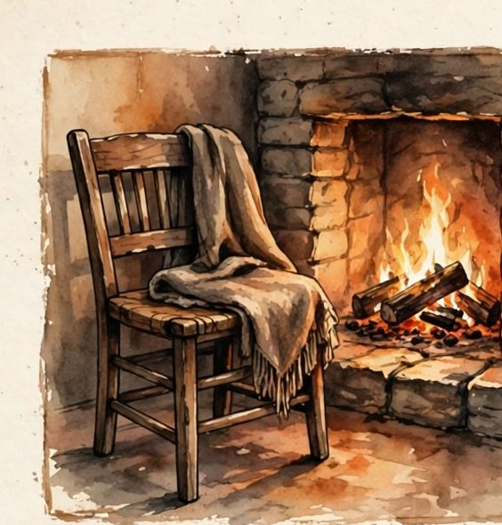
A storyteller's chair stands by the hearth, cushion worn, fire low.
There is a voice that has accompanied me every day of my life, and this hall exists because of it. It speaks in the first person, which is the boldest of its liberties: it does not say he went to the shops, but I went to the shops, and of course the queue was long, and of course I chose the wrong one. It narrates as I go, and it goes on narrating after I stop. The principle of this house is stated once, here, plainly: a voice narrates my life to me all day, in the first person — and a story can be retold. The first draft is not the verdict.
The narrator is not an enemy, and this hall is not an eviction notice. Left to his work, he has kept me company through moves and illnesses and long drives; he has explained strangers to me, consoled me with pattern, and warned me with precedent. His faults are a craftsman's faults. He files too quickly, he reaches for the familiar shelf, and he prefers a tidy ending to an honest muddle. He will summarize a whole afternoon into one sentence and defend that sentence for years. But he is staff — he works here. The trouble only begins when nobody remembers who hired him, and his summaries start arriving with the weight of court records.
So the house keeps a chair for him by the fire — the good chair, by long custom — and this hall is simply the room where his work is laid out where it can be seen. One hundred and twenty rooms of it: the old tales, the hero versions, the prosecutions, the warnings, the unfinished drafts. Nothing here is burned. Nothing here is believed on arrival, either. We read the stories the way a keeper reads a register — with respect for the hand that wrote them, and a pencil held in our own. A story told a thousand times is still only a story, and the teller, mercifully, can always tell it again.
2There Is a Voice That Narrates
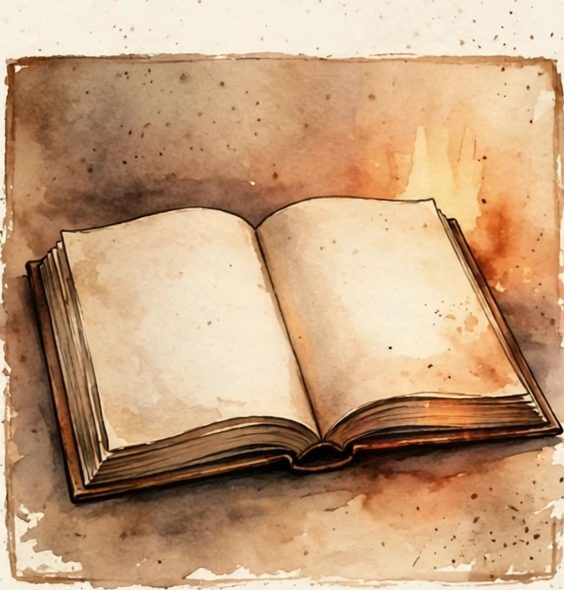
An open book of blank pages lies in the firelight, waiting for its lines.
Most people meet the voice late, the way one notices a clock's ticking only when the room goes quiet. It has been there all along. It comments on the weather before the window is reached, replays the morning's conversation in the bath with improvements, and drafts the difficult letter while the hands are still washing up. It is not a ghost and it is not a symptom; it is nearer to a resident correspondent, filing dispatches from inside the events themselves. By the time a thing has happened to me, it has usually already been reported to me, in my own voice, with headlines.
The voice is not quite the same thing as thought. Thought argues, weighs, and occasionally wins; the narrator reports, and reporting has its own quiet authority. He favors the past tense for anything painful and the future tense for anything feared, and he edits in real time — a stumble becomes a pattern, a kindness becomes an exception, a silence from a friend becomes a paragraph. He has style, which is the problem and the pleasure of him. A life narrated flatly would be easier to audit and much harder to inhabit. He is, whatever else, never dull at my expense for long.
Once heard, the voice cannot be unheard, and the house counts this as good news rather than bad. A narrator you can hear is a narrator you can answer, correct, thank, or send to bed; a narrator you cannot hear simply runs the paper unopposed. Everything in these halls follows from that small distinction. The stories are not being exposed as false — most of them are true the way weather reports are true, roughly and from one station. They are being returned to their author for another pass. The voice was never the master of this house; it was only the one who never stopped talking.
3The Narrator Works the Night Shift Too
The day narrator is a reasonable employee, but he works a second shift, and the night work is of a different quality. At three in the morning the remark I made at lunch returns with footnotes; the unfinished task stands at the foot of the bed like a bailiff; the body's small noises are read aloud as bulletins. Nothing new has happened since midnight. The facts have not changed their clothes. But the night narrator works in worse light, and in worse light every coat on the rack looks like a visitor. The house has learned to note the hour on his drafts before judging them.
His night method is repetition with emphasis. A worry that the day handled in one line is given, at night, a full hearing, both sides argued by the same voice, the verdict somehow always deferred to dawn. Sleep, when it comes, is less a rest than an adjournment. The house does not mock the night shift; some genuine news genuinely arrives at odd hours, and grief, in particular, keeps its own timetable and will not be rescheduled. But the ratio is instructive. Nine night alarms in ten are the day's ordinary business wearing a darker coat, and the tenth is usually recognizable by its quietness.
The practical discovery, made by every insomniac eventually, is that the night drafts can be initialed and set aside rather than obeyed. Read at breakfast, in the flattest light of the day, most of them shrink to their proper size — a concern, a chore, a telephone call to make. The sentence that seemed carved in stone at three turns out to have been written in the condensation on a window. The house therefore keeps a rule about hours, and it has saved more peace than any argument. Nothing written at three in the morning should be engraved by noon.
4Every Story Has a Teller
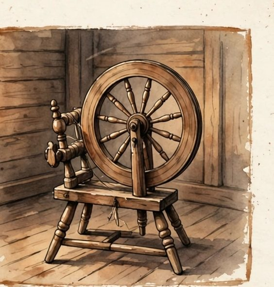
A spinning wheel stands ready, thread drawn, the distaff full.
Behind every account of my life there is a teller, and the teller is never neutral equipment. He has a mood, a decade, an audience he is privately playing to, and a set of convictions about how stories ought to end. The same year of my life, told by me at thirty and told by me at sixty, comes out as two different books with the same chapter headings. Neither man is lying. Each is reporting from his chair. The facts keep their coats on throughout; it is the weather in the room that changes, and weather, in a story, is half the meaning.
The teller's first tool is selection, and selection is not deceit — no story can carry everything, and a map the size of the country is no use to anyone. But selection is authorship all the same. The teller chooses which of the day's forty events become the day, and the choosing follows his habits the way water follows a channel. Watch a man's stories and you learn his channels: this one always finds the insult, that one always finds the rescue, a third finds, with professional reliability, the evidence that nothing can be done. The events oblige all three. Life is generous that way.
So the house has a standing question, asked of any story that arrives with unusual confidence: who is telling this, and when did he learn to tell it so? Often the answer is touching. The teller is a younger me, filing from a harder year with the equipment he had; or a parent speaking through me in phrases worn smooth as steps; or the night-shift man, doing his best in bad light. Naming the teller does not dismiss the tale. It returns it to human scale. Change the teller, and the facts keep their coats — but the weather in the room is different.
5The First Draft Is Not the Verdict
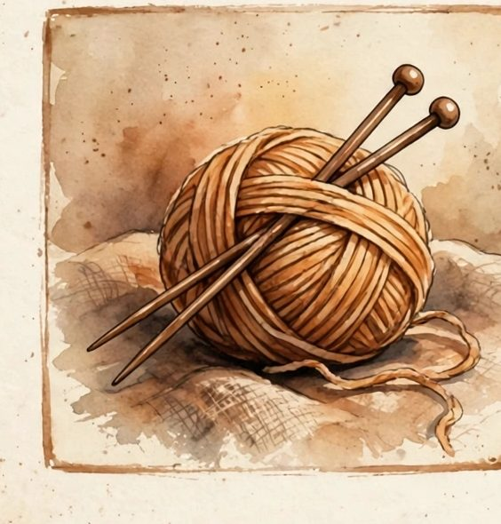
A ball of yarn unwinds across the floorboards, its end not yet found.
The first account of anything arrives hot. The story of the failure is composed in the hour of the failure, by a teller who is still standing in the wreckage with his notebook; the story of the triumph is drafted before the applause has finished echoing. Both are honest documents and both are hopeless history. They record what the moment felt like from inside, which is precisely the vantage from which proportion is invisible. The house therefore treats every first account as a draft — filed, respected, and never, ever engraved. Time is the editor on staff here, and he accepts submissions indefinitely.
This is not a counsel of vagueness. Some drafts harden because they are useful: the quick story — I am bad at this, that road is closed, those people are not for me — saves the teller the labor of fresh attention, and he pays for the saving in territory. Whole provinces of a life can be ceded to a sentence written in one bad week. The house does not require that every draft be reopened; the register is long and a life is short. It requires only that the drafts remember what they are. A story that knows it is a draft stays soft at the edges, and soft edges are where new evidence gets in.
The verdict, by contrast, is a draft that has stopped being edited — promoted, usually, by repetition rather than by truth. We have all kept a few, polished like brass plaques. This hall's whole doctrine stands in one small grammatical mercy: the past can be retold in the present tense of a wiser teller, and the retelling changes nothing that happened and nearly everything that it does. The plaques hang in the corridor of every life, and some of them are handsome, and a few are even accurate. The house merely knocks on each one, politely, about once a decade, to hear whether it still rings true. A verdict is a draft that stopped being edited; keep the pencil, and nothing is final.
6Stories Are How I Carry Facts
Facts, on their own, are nearly unportable. A year of my life, as raw record, would fill a warehouse: every meal, errand, weather, and remark, in no order and at full weight. Nobody carries that. What I carry instead is a story — the winter the pipes burst, the year of the long commute, the summer everything changed — a handle fitted to the load. The story is not the facts, and it is not a falsification of them, either. It is the carrying device. Human memory is a porter, not a warehouse, and it charges by the handle.
The difficulty is that the handle shapes what gets carried. What fits the plot comes along; what contradicts it is set down in the yard and, over the years, quietly weathered away. The story of the difficult decade carries the three worst months in the front pocket and loses the forty ordinary good weeks entirely, not from dishonesty but from design — a story about endurance has no shelf for ease. Auditing a life therefore never means finding the story false. It means walking out into the yard now and then to see what was left uncarried, and whether any of it has become, in the meantime, valuable.
The house keeps the yard gate unlocked for exactly this purpose, and its keepers are sentimental about the uncarried facts: the kindness that fit no narrative, the competence that embarrassed the legend, the afternoon of plain contentment that no genre would claim. Such facts wait patiently. They are not resentful; they are only unstoried, which in a human life is a kind of invisibility. Sometimes a single one of them, fetched in at last and dusted off, rebalances a whole decade of the register. The facts were never lost — they are only waiting in the yard for a better story to carry them.
7The Tone Matters More Than the Plot
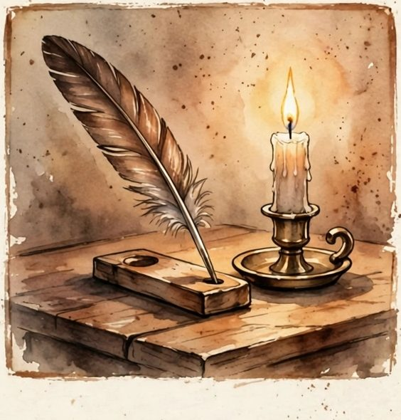
A feather quill rests beside a candle, the page beneath it blank.
Take the plainest plot in any life — a job lost, a train missed, a friendship cooled — and notice that the events themselves are barely the story. The story is in the tone of the telling. The lost job, told in the tone of farce, is the year I escaped; told in the tone of a funeral notice, it is the year I was discarded. Same month, same desk cleared, same cardboard box. The narrator rarely dares to change the facts — he is too fond of his reputation for accuracy — but the tone is entirely his, and he spends it like a man who has never seen the bill.
Tone decides what a fact weighs. A setback narrated dryly is luggage; narrated tragically, it is a monument, and monuments cannot be carried, only visited. A success told with a shrug stays usable; told as a coronation, it must be defended forever, at rising cost. The house has watched whole lives bend under nothing more than a tone applied daily, the way a path bends under weather. This is not an argument for cheerfulness, which is only another tone and can be as dishonest as gloom. It is an argument for noticing who is choosing the music while the facts walk across the stage.
The mercy is that tone, unlike plot, can be revised tonight. The year does not have to be lived again to be told in a fairer key; the teller only has to sit in a different chair. Nothing in these halls asks for a false note — a dirge where a dirge is owed should be sung in full. But most of my history is not dirge material, whatever the night shift says. Tell the facts in a kinder tone, and the same life, unedited, becomes easier to live in.
8My Narrator Has Favorite Genres
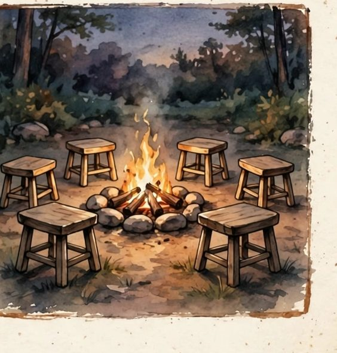
A circle of empty stools waits around a campfire, embers bright.
Like any working writer, my narrator has his favorite genres, and he returns to them the way a hand returns to a worn pocket. The comeback is one: evidence is gathered patiently until the reversal can be announced. The cautionary tale is another — in it, every misfortune was foreseen by the teller, who is somehow always its prophet and never its author. There is the genre in which I was right all along, shelved between the genre in which nobody listens, and the late-evening genre, much loved, in which it is all, on inspection, somebody else's doing. Each genre has its own lighting, its own music, its own rules of evidence.
Genre is, at bottom, a habit of explanation. Hand the narrator a mystery and every fact becomes a clue; hand him a tragedy and every happiness becomes a brief reprieve between sorrows. The day itself obliges all genres impartially — it contains enough material for the farce, the elegy, and the quiet domestic novel, all before supper. Which one gets told is decided earlier than the events, at the moment the teller reaches for his shelf. This is why two people can share a decade and report different centuries. They were not reading different years. They were reading different shelves.
The house does not confiscate the favorite genres; some of them have kept the teller alive, and gratitude is owed. It only hangs other shelves in the same room, within reach: the genre in which things simply happen, the one in which I am a minor character in other people's stories, and the rarest of all, the genre in which nothing needs explaining. On a good evening several are tried in succession, and the same day is told four ways before the kettle boils, each way truer than the last was false. A genre is only a chair the teller sits in too often — the fire does not mind if he moves.
9The Story Under All the Stories
Under all the particular stories — the tales of the job, the marriage, the town I left — there runs one root story, seldom spoken aloud, from which the others draw their sap. It has the form of a caption: I am the sort of person to whom such things happen. The endings vary by household and by decade. To whom things are done. Who must earn everything twice. Who is tolerated rather than wanted. Who always lands on his feet, at a price. The caption is usually installed early, by hands the teller can no longer identify, and it is worked like a loom's first thread — everything woven afterward crosses it.
The root story does quiet, enormous work. It is the admissions office of the whole estate: evidence that agrees with it is waved through and filed in daylight, while evidence against it waits in the corridor, unexamined, sometimes for decades. A compliment that contradicts the caption is registered as politeness; a slight that confirms it is registered as truth. This is not stupidity — it is administration, and every archive does it. But an archive can be re-catalogued. The house's interest in the root story is simply that it be read, at last, as a story — the oldest draft in the building, not the building's foundation deed.
Changing it, when it changes, is never the work of an argument. Arguments bounce off captions. What changes the root story is usually a fact too large to leave in the corridor — a love that stays, a failure survived so completely that the old caption cannot file it, a decade of quiet counter-evidence finally given a hearing. The branches notice slowly. The stories of the job, the marriage, the town begin to come out differently, though nobody announced a renovation. Change the root story, and a hundred branches quietly change their leaves.
10The Narrator Is Staff, Not Management
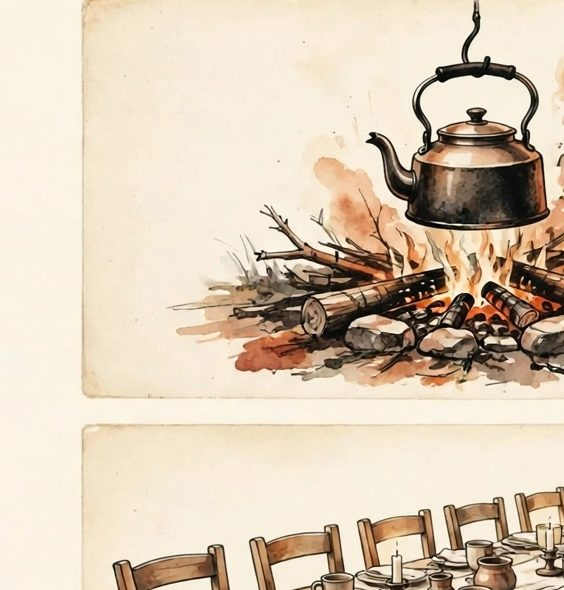
A kettle hangs over a small fire, steam rising in the quiet room.
The household order of this hall can be put in one sentence: the narrator is valued staff — he keeps the minutes beautifully — but he does not chair the meeting. This arrangement surprises people who had assumed the voice in their head was the head itself. It is not. It is the secretariat. It drafts, summarizes, files, and announces; and the announcements arrive with such fluency that they are easily mistaken for decisions. The house has simply noticed that a decision made by headline is still only a headline, and that the actual government of a life is slower, quieter, and mostly silent.
Management, in this metaphor, is the part of a person that reads the minutes at leisure, over tea, and is in no hurry to sign. It knows the narrator's house style — his deadlines, his genres, his night shift — and discounts accordingly, the way an editor discounts a correspondent known to file dramatically. None of this demotes the narrator. A good secretariat is the difference between a household and a crowd. His summaries are how experience becomes portable at all. The order is only about who signs. The voice proposes; the life disposes; and a great deal of misery comes from letting the prose department believe it holds the seal.
Keeping the order takes no effort of suppression — the narrator cannot be dismissed, and the house would not dream of it. It takes only a pause, maintained by custom, between hearing a story and living by it. In that pause the whole of this hall's freedom lives. The pause need not be long — a breath, a kettle's worth of time, one walk around the garden with the draft still unsigned in the hand. What matters is that it exists, that it is kept by custom, and that no story, however beautifully told, is allowed to skip it. The narrator keeps the register beautifully; the house is run, as it always was, by the one who reads it.
11Listening Without Obeying
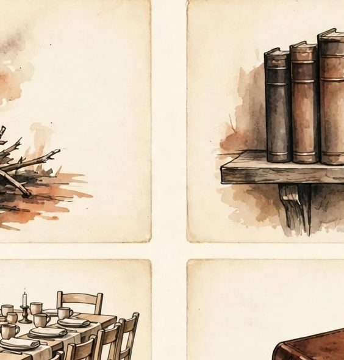
A shelf of blank-spined tale books stands in the firelight, unopened.
There is a skill this whole hall quietly teaches, and it is not silencing the narrator — that cannot be done, and the house has stopped recommending it. The skill is listening without obeying: hearing a story to its last word, with genuine attention, and then declining to sign it on the spot. In the old arrangement, hearing and obeying were the same event; a mood was set by a headline, a day was governed by a summary drafted at the sink. Most people live so, and it works after a fashion, the way a house works where the secretary also keeps the only key.
Listening, properly done, is slower and more courteous than obeying. The listener lets the teller finish — even the night teller, even the prosecutor, whose halls come later. He asks the questions a good reader asks: When was this drafted? In what genre? What has it left in the yard? None of this is cross-examination; the tone is of a keeper checking a delivery against the order book, mildly, in daylight. Half of all bad stories collapse under nothing more than this courtesy. They were written for an audience that would panic or applaud on cue, and a calm listener ruins the performance by enjoying it too intelligently.
What remains after the listening is the part that was true — there almost always is a part, and the house insists on keeping it. The story said I was careless; the listening finds one careless hour, honestly noted, inside a careful year. Obedience would have signed the whole indictment. Listening files the hour and returns the year. That is the whole transaction, and it costs nothing but the admission that the first hearer and the final editor are allowed to be different shifts of the same household. A story can be heard to its last word and still be sent back for revision.
12The Chair by the Fire
Every house has one chair that is not like the others: the chair by the fire, from which the tales are told. It is not the most comfortable seat in the room, but it is the one with authority, the way a witness box has authority — whoever sits in it is, for the length of the story, the version of events. In childhood the chair belonged to elders, and its pronouncements had the weight of weather. Later it passed, almost without ceremony, to the narrator himself. This hall keeps the chair in view because so much depends on remembering that it is a chair — furniture, not a throne, and certainly not a fact.
Whoever sits in the chair borrows its authority, and the borrowing explains a great deal. Grandmother in the chair could make a famine into an epic; the same events from the kitchen stool were only hunger. The self at midnight, seated in the chair by a dying fire, tells the day as a courtroom drama; the same self at breakfast, on a stool with toast, tells it as a muddle with good intentions. The chair has not changed. The house therefore permits anyone — memory, fear, an old parent, a new friend — to be heard from the chair, and permits nobody, including yesterday's self, to own it outright.
At the end of the evening, the chair is only a chair again, standing empty in the firelight with the day's warmth leaving it. This hall returns to it at the close, because its lesson is the estate's whole doctrine in one piece of furniture. The teller of the hour climbs down, pours what is left of the tea, and becomes a listener again among listeners — no smaller for the descent, and usually better company for it. The chair is only furniture; the warmth is real, and the tales are told for the warmth.
13The Old Tales
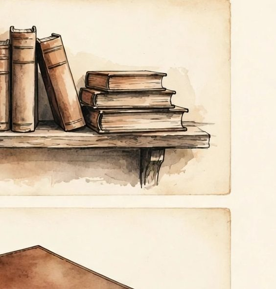
A family table is set for many, every chair standing empty.
The old tales are the foundation stories of a life, and they have this in common with foundations: nobody remembers them being poured. They were already there when consciousness moved in — the account of how our family came to this town, of what grandfather did in the war, of why we do not speak to that branch, of the year everything was lost or the year everything was nearly lost. A child receives them the way he receives the layout of the house, as simply the shape of the world. Only much later does it occur to him that they were composed, by tellers, with beginnings chosen and endings fitted.
Old tales arrive with their morals already installed, like plumbing, and the morals do more work than the facts. The tale of the lost farm is rarely about the farm; it is the pipe through which a family's doctrine of money, luck, and other people's envy still flows. Repeat the tale and the doctrine is re-delivered, whether anyone signs for it or not. This is why the old tales are told at gatherings with such ceremony and such sameness. The family is not reminiscing, exactly. It is maintaining the building — checking the foundation aloud, together, to be sure it still says what it has always said.
The house honors the old tales as inheritances and reads them as drafts, holding both courtesies at once, which is the whole difficulty and the whole point of this hall. They are not to be mocked — too much real endurance is stored in them — and they are not to be worshipped, either, since their tellers were people, in chairs, choosing endings. Hold both courtesies at once and the tales, remarkably, relax — they stop performing antiquity and become what they always were underneath: somebody's first draft of events that mattered too much to leave untold. An old tale is not old because it is finished; it is old because nobody remembers beginning it.
14The Story I Inherited Whole
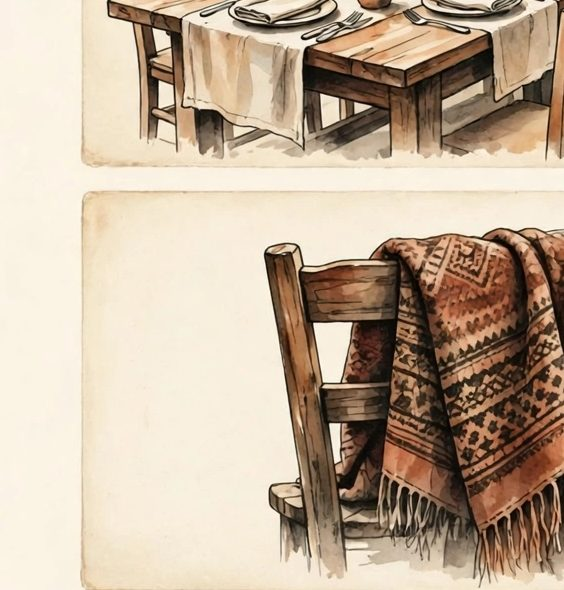
A photograph album rests closed on the table, its cover blank.
Some stories I did not compose at all. They came to me whole, bound, with the ending already agreed — the story of why we left, the story of what my father was, the story of the kind of people we are and the kind we are not. I could recite them before I could have understood them, the way a child recites a grace. For years it did not occur to me that a story, like a coat of arms, could be inherited without being examined. It sat in the front of the register, in an older hand, and all my own entries were written beneath it in the margins.
Inheritance is not authorship, and discovering the difference is one of the quiet emancipations of middle life. A man may live honorably in a house he did not build; he may also, without ingratitude, decide that one room wants re-papering. The inherited story deserves its initialed respect — people paid for it with their lives, in some cases literally — but its tellers are beyond being hurt by my questions now, and the questions are usually kinder than the silence. Often the inherited version turns out to be the family's hero cut of events that had a longer, sadder, more ordinary reel, and knowing that makes the ancestors more, not less, lovable.
What was handed down entire can still, in the event, be read entire — aloud, slowly, with the family ghosts accommodated in the good chairs. Reading is not agreeing. The house notices that the people who most fiercely forbid questions about an inherited story are rarely defending the dead; they are defending the arrangement of the living that the story props up. Read it anyway, as a guest reads a plaque in a house he loves. What was handed down entire can still be read entire — and reading, in this house, is already a kind of reply.
15Tales Told at the Family Table
The family table is the first publishing house any of us knows, and its editorial standards are enforced by love, appetite, and repetition. Tales were workshopped there annually — at birthdays, at holidays, at the long dinners where the same incident was brought out with the good dishes and told, by prior arrangement of the whole table, the same way. A child's version would be corrected mid-sentence, not unkindly: no, it was your uncle who said it; no, the car was blue. By the third correction the tale had achieved its official text, and the official text was remembered by everyone as simply what happened.
Repetition at the table gives a story its varnish. Details that complicate the flow — the second cause, the mitigating Tuesday — are edited out between courses, not by conspiracy but by appetite; a table wants its stories the way it wants its gravy, smooth. Dissenters learn the local law early: you may add a garnish, you may not send the dish back. So the family's history acquires the polish of its furniture, and about the same relationship to the forest. It would be wrong to call this lying. It is cuisine. But a person who wants the raw ingredients will have to ask the cook privately, years later, and not everyone gets the chance.
The table outlasts most of its tellers, which is why its stories have their peculiar authority — they seem to come from the room itself. The house keeps a table like it deliberately, in honor of the arrangement, and a spare chair for whoever eventually arrives with a different version and the courage to serve it gently. Some years the new version is even accepted — tasted, considered, and allowed a small place at the end of the meal, where in time it seasons the official text itself. The table forgets nothing and forgives most things, which is why its stories last.
The Story Desk
One desk receives all correspondence for this fireside — questions, corrections, greetings, and word of any tale of yours that has lately changed its ending, or refuses to. It is read in the order it arrives.
16The Legend of the Difficult Child
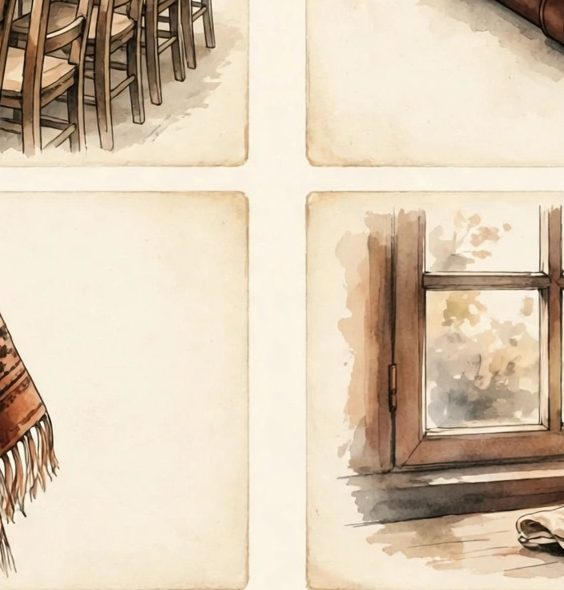
A shawl is draped over a chair back, left where its owner sat.
Many families keep one legend in permanent repertory: the legend of the difficult child. Every household seems to require one — a designated weather system, a small person to whom the family's storms were attributed while the adults' own climates went unexamined. The legend is told with real affection, often by the difficult child himself, grown and doing the voices. He was stubborn, she was dramatic, he cried at nothing, she asked questions at funerals. The evidence is always excellent, because it has been selected for forty years by a publishing house with a thesis.
A legend of this kind does quiet administrative work for everyone else at the table. If the child was the difficult one, then the household was, by definition, reasonable; the legend is a certificate the family issues itself. This is not villainy — it is the ordinary bookkeeping of people who were doing their best in a hard year. But legends have long half-lives, and the designated child carries his caption into boardrooms and marriages where nobody has read the original minutes. He may spend decades auditioning against a review written when he was six, by critics who loved him, before he notices the review can be appealed.
The house keeps this legend on the program but reads it now as what it is: a story a family told about its weather, starring its smallest meteorologist. The child in it deserves the tenderness the tellers intended; the grown person at the table deserves something more — a hearing in his own name, without the caption. It costs the family nothing to grant it except one cherished explanation, and it pays the legend's subject back his whole biography, with interest, in the course of a single afternoon. A child in a legend is a character; the grown person at the table deserves a hearing in his own name.
17Stories With Grandparents in Them
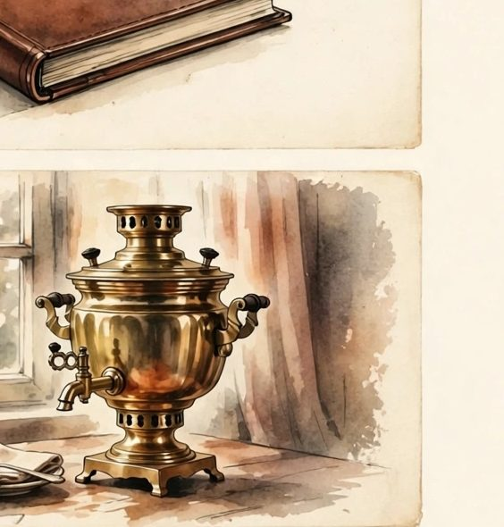
A samovar gleams on the table, steam curling in the lamplight.
Grandparents enter the family stories already enlarged. By the time a child hears them, the famine has become an epic, the migration an exodus, the courtship a legend with its own theme music. This is not distortion but perspective: the grandparents' young years are the family's antiquity, and antiquity is always told in larger type. Their tales arrive with the force of scripture — not to be footnoted at the table, not to be checked against other witnesses, who are in cemeteries and unavailable. A child absorbs them the way he absorbs the names of the months: as the order of the world.
The house honors the scripture and, quietly, declines to be governed by its letter. The grandparents were giants in the tales and ordinary at breakfast — frightened sometimes, foolish sometimes, tired on Tuesdays in the famine year like anyone else. Their official versions were their own hero cuts, edited at their own firesides for their own morale, and there is no disrespect in knowing it. If anything, the knowing completes the portrait: they too sat up at night with a narrator, they too filed first drafts and called them history, they too were staff and management of a house like this one.
So the samovar stays on the table and the tales stay in the program, told in full and believed in the way one believes weather from a country one has never visited — truly, and with an allowance for the telling. Their silences, too, are part of the inheritance — the chapters they declined to tell were also editing, and a grandchild old enough to notice the gaps is usually old enough to be grateful for some of them. The grandparents were giants in the tales and ordinary at breakfast, and both tellings are a form of love.
18The Tale That Explains Everything — Too Well
Every life acquires, sooner or later, one master tale — the story that explains everything. It was the move. It was the marriage, or the divorce. It was my mother, my schooling, the year abroad, the illness, the betrayal with a date on it. The tale has genuine evidence behind it; that is what makes it dangerous. In the narrator's hands it becomes a key that fits every lock in the house: the career, the temper, the fear of telephones, the taste in friends — all filed under one cause, all excused or condemned by one chapter. A story that explains everything is a wonderful servant of understanding and a perfect tyrant.
The house has learned to test such tales by their appetite. A healthy explanation can be surprised; it has room in it for the fact that does not fit, which it files under weather. The master tale cannot be surprised. Counter-evidence is not weighed but processed — re-described until it agrees, or dismissed as the exception that everyone knows proves the rule. Whole decades can be lived inside one such explanation, comfortable as a well-worn coat, while the life outside it goes quietly unexamined. The teller is not a fool. He is a man with one excellent key, opening every door in the house whether it was locked or not.
The correction is not a rival key but a ring of them, duller and more honest, one for each door. Most rooms in a life open to several causes at once, and the house prefers that untidiness; it is how the actual building is plumbed. The master tale may keep its chair — it earned a hearing, once — but it is asked, like every other resident of the house, to leave the doors it does not open standing honestly shut. Beware the story that fits every lock; it has usually been filed down to do it.
19Old Tales, New Evidence
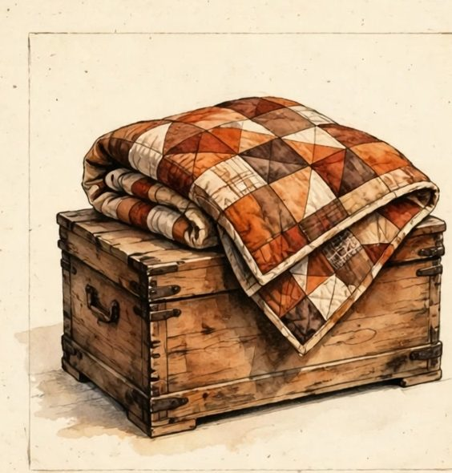
A patchwork quilt lies folded, new squares stitched along one edge.
Evidence in a family case arrives late, on no schedule, and usually by accident: a letter found in a drawer after a funeral, a stranger's memoir, the other witness — the quiet aunt, the retired colleague — finally asked a direct question at the age of eighty. The new fact is rarely dramatic by itself. It is a date that cannot stand, a kindness that was never in the official version, a motive that rearranges the furniture of a fifty-year-old room. Brought to the old tale, it is received the way old houses receive new wiring: with suspicion, some drilling, and occasional remarks about how things were done properly in the old days.
What happens next divides the tales into two kinds. Some cannot admit the fact and must spend the rest of their lives guarding against it — the letter unmentioned, the aunt uninvited from that topic, the whole register subtly re-inked. Others, the great ones, make room. The family legend of the grandfather's ruin turns out to have a partner in it, silent all these years; the villain of the divorce acquires a decade of context; the difficult child is discovered, in a school report, to have been ill. The tale does not collapse. It deepens, the way a river deepens at a bend, and flows on carrying more of the truth than before.
The house keeps a drawer for late evidence and a standing instruction that it be read aloud, however late it comes. It arrives too late for the original tellers, most of whom would — the house believes, charitably — have wanted the record straight. It is rarely too late for the listeners. A family that can receive one late fact without defending itself against it discovers, usually with relief, that the tale was stronger than its editors feared, and the ancestors no smaller for the amendment. A tale that can admit one new fact can admit a second, and that is how legends become history.
20The Story Everyone Else Remembers Differently
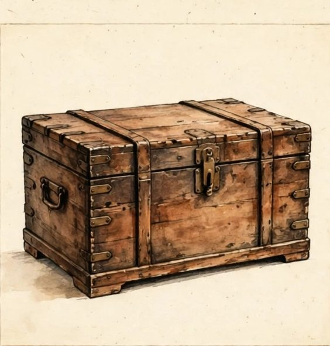
An heirloom chest stands with its lid closed, the key beside it on the cloth.
Tell the family's most famous incident at a reunion — the fire, the wedding, the day the money vanished — and watch the official text fork in real time. Five witnesses produce five films: different weather, different villains, a different person entirely who said the famous sentence. Nobody is lying, which is the scandal. Memory turns out to be a co-authorship nobody agreed to, each contributor editing from his own chair, his own decade, his own unsettled account with the other witnesses. The event happened once. The stories happened ever since, and it is the stories we have actually been living with.
The first response to the forking is usually a small, real grief — if this story is not single, then perhaps none of them are, and the past loses the solid floor the present was standing on. The house has made its peace with the discovery and recommends the peace to others. A floor was never the right furniture for memory; a fireside is. Other people's versions are not theft of mine. They are the record of where I was standing, completed by the record of where everyone else was standing, and the afternoon is larger for all of them — funnier, usually, and sadder in different places.
So the reunion versions are all entered into the register, attributed, dated, and shelved together under one heading: the day, as told from the available chairs. The register is larger for it, and more honest; and the famous incident, relieved of the duty of being a single thing, settles into what it perhaps always wanted to be — an occasion the family still enjoys, in five keys at once, none of them wrong, and the afternoon itself, could it be asked, would probably recognize all of them. Their versions are not corrections of mine; they are the same afternoon, told from other chairs.
21Retellings Wear the Grooves Deeper
A story told once is an event; a story told a hundred times is a road. Each retelling runs the cart along the same track — the same three details in the same order, the same pause before the famous sentence, the same laugh arriving a beat early, like an old friend who knows the joke. The teller is not being lazy. The groove is efficient: it carries the story at speed, without steering, and delivers it intact to listeners who themselves know where the bumps are. Families drive these roads together for decades, and there is real fellowship in the driving.
But a groove has a property its users seldom notice: it decides the destination. A cart in a deep rut arrives where the rut goes, however attentively the driver holds the reins. The story of the terrible year, retold into a groove, can no longer turn off toward the two good months; the legend of the feud cannot reach the reconciliation that happened later and has no track laid to it. What wears deepest is not memory but emphasis — the chosen details polished to glass, the unchosen ones buried a millimeter deeper with every passing year, until the teller honestly believes the story contains the whole of what occurred.
The house does not propose filling in the grooves; some of them are beloved, and a garden without paths is a swamp. It proposes only that the teller walk beside the cart now and then, on the grass, where the footing is slower and the view is different. One walk is enough to reveal the turnings the rut has been passing for years. And the walking is not a penance or a program; it is a pleasure the teller had forgotten he was allowed — the story, heard fresh from the grass, is usually funnier than the road version, and kinder, and noticeably less certain of its ending. A groove is a kindness to the cart and a quiet theft from the journey.
22Some Tales Are Heirlooms; Some Are Hand-Me-Downs
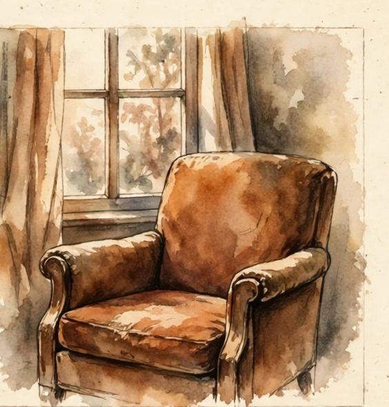
A worn armchair stands by the window, its arms polished by generations of hands.
The old tales arrive from the same attic, but they do not all arrive in the same way, and telling them apart is one of the quieter works of a life. An heirloom is a story kept because it is loved: the account of grandmother's courage, worn smooth by handling, brought out on purpose and put away with care. A hand-me-down is a story worn because it was there: the family's opinion of money, of my branch of the tree, of what people like us can expect — received with the furniture, used daily, never once chosen. Both are old. Only one was ever actually wanted.
The distinction is not between true and false; hand-me-downs are often accurate, and heirlooms are regularly embroidered. It is between custody and consent. The heirloom has been looked at, generation by generation, and kept on purpose, which is why it carries its love so visibly. The hand-me-down has merely not been returned. Whole adults walk about in hand-me-down opinions of themselves — too cautious, too loud, the family worrier, the one who will never settle — dressed in childhood's outgrown convictions because the attic was nearer than the shop. The garments are not cursed. They are simply not theirs.
The house's sorting method is unhurried and entirely private: hold each tale up, once, and ask whether it would be chosen again today, at full price, by the person it describes. The heirlooms pass the test without noticing it was a test. The sorting is not a bonfire and nothing in this hall recommends one. A tale refused residence may still be visited, quoted at dinners, and honored for the years it kept somebody warm. It is simply no longer worn out of the house by a grown person who was measured for it at the age of nine. Keep the heirloom on the mantel; the hand-me-down may be returned to the attic without ceremony.
23Visiting the Old Tales as a Guest
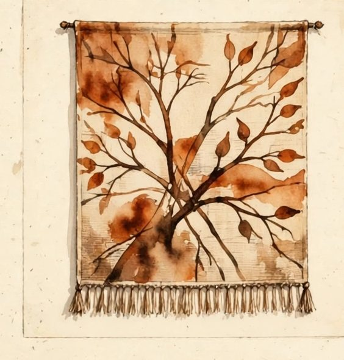
A tapestry of bare branches hangs above a chair set ready for a visitor.
There is a posture toward the old tales that this hall recommends above all others, and it is the posture of a guest. A guest is courteous in a house that is not his: he admires the furniture, he does not rearrange it, and he does not have to sleep there. Applied to the old tales, the courtesy is genuine — these stories sheltered the family before I was born, and some of them sheltered people I love through weather I have only heard about. I may visit the tale of the feud, the tale of the ruin, the tale of our superiority to the neighbors, sit in their front rooms, and take the tea that is offered.
What the guest does not do is move back in. Residence is a different contract: it means the tale pays my bills of explanation, receives my post, and answers my telephone. Most of us, at some point, discover we have been living full-time inside a story we only ever meant to visit — its opinions answering for ours, its ending pre-printed on our own unfinished business. The discovery is not a scandal. The move out is not dramatic either. The guest's freedom is simply remembered, the way one remembers owning a coat in the hall: I can put this story on when the weather suits, and hang it up when I come home.
The old tales, visited rather than inhabited, become better company — funnier, sadder, less defensive, like relatives one no longer needs anything from. And the door of the house they are kept in stands open in both directions, which is the whole architecture of the thing. The visit even improves the tales themselves, over time. A story with guests in it stays aired; a story lived in too long, with the windows shut by its residents, grows the particular mustiness that families call respect and outsiders call a draft. You may visit any story you own; you are not required to sleep in all of them.
24An Old Tale Is Not an Order
Old tales have a way of arriving in uniform. In this family we do not ask for help. People like us do not make scenes, do not change trades at forty, do not marry out, do not come back. The sentences are grammatically descriptions and functionally commands, and they have been obeyed, in some houses, by four generations of people who never noticed a command had been given. The teller of them is usually dead. The obedience continues by itself, like a clock nobody winds, because the tale has been hung in the corridor where the household rules are kept, and nobody remembers moving it there.
The house wishes to be precise about its heresy: a description is not an order, even when the description is accurate, and even when it is beloved. That we have always done a thing is the record of a habit; it becomes a law only when someone declines to ask why it is posted in the corridor. Honoring the tellers does not require obeying their drafts — the tellers, who revised plenty in their own lifetimes, would mostly be puzzled to learn their summaries had been promoted to scripture. Several of them, one suspects, were simply making conversation in a hard year and would be appalled at the compliance department their remarks acquired.
So the old tale is returned to its proper furniture — the chair by the fire, where it may hold any audience it can win — and the corridor is left for actual orders, of which a life has few enough. Nothing is torn up in this proceeding, and no ancestor is posthumously scolded. The tellers keep their chairs, their tea, and the audience they can honestly win. What they surrender is only the gavel — which, the house notes with some delicacy, they never actually owned while they were alive either. The old tale may keep its chair by the fire; it does not keep the keys to the house.
25The Hero Version
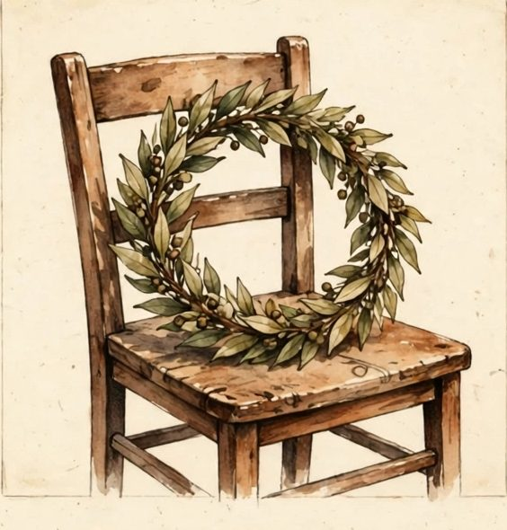
A laurel wreath rests on a wooden chair, its ribbon bright against the grain.
In a drawer of the register — every register has one — there is a cut of my life in which I am splendid. In the hero version the decisions were braver, the timing was better, the famous sentence was said at the moment it was needed, and the people who doubted me are shown, in the final reel, revising their opinion. This version is not a lie and it is not a secret; it is screened regularly, especially on the evenings when the actual record has been unkind. Every life keeps such a version. The house's interest is not in closing the cinema but in reading its program notes honestly.
The hero version is assembled by the same narrator who does everything else, working in his most expensive genre. Its budget shows: better lighting, a score, the hesitations left on the cutting-room floor where they belong. What it produces is morale — a substance as real as bread and as perishable, which must be manufactured regularly or not at all. A person with no hero version whatever is not humble; he is usually just exhausted, and at risk of believing the prosecution's cut simply because it is the only one still being screened. The two versions are rival studios, and this hall audits both.
Kept in its drawer, labeled, and screened at proper intervals, the hero version does the estate nothing but good. It becomes a problem only when it applies for the register's front page — when the trailer demands to be filed as the feature, and the facts are asked to wait in the corridor. It is screened, in short, the way a soldier polishes a medal he did not quite earn the citation for — privately, regularly, and with a clear conscience about the polishing, if not always about the citation. Every life keeps a hero version in the drawer, and the drawer, honestly kept, does no harm.
26Starring Myself, Slightly Improved
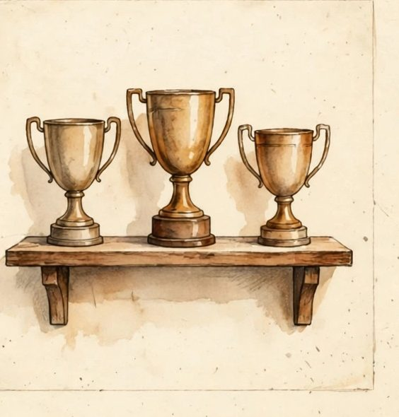
A shelf of plain trophy cups catches the morning light along its rims.
The improvements in the hero version are famously small, and their smallness is the tell. I am not, in my own cut, a different species — I am myself, slightly improved: the retort arrived on time instead of in the stairwell an hour later, the voice did not shake during the telephone call, the exit line was delivered to the room instead of to the car park. The editor responsible knows exactly what the facts will bear and never asks for more than they can carry. A flight, a fortune, a famous name — these he leaves alone. He works in the margins, where belief is cheap and the upgrades are deniable.
Slightly improved is a precise artistic choice, and it deserves its moment of respect. A hero too distant from the record could not be moved into; the teller would watch him the way one watches weather in another country. The improvement is calibrated so that the hero remains habitable — a coat of my own, let out a careful inch at every seam. This is why the version is so durable and so difficult to argue with. Every claim in it is almost true, and the almost is distributed so evenly that no single fact can be subpoenaed. The studio's standards are, in their way, impeccable.
What the margins contain, however, is worth one honest look, because the trimmings are not waste. The hesitations the editor removed were where the fear was, and the fear was usually information; the stairwell retort, arriving late, was the one my actual conscience wrote. The house therefore reads the hero version the way a tailor reads a let-out seam: with professional respect for the work, and a private note of how much material was actually there to begin with. The hero is me with the hesitations trimmed, and the trimmings are where the person was.
27The Victories Get Longer in the Telling
There is a race I won once, by a stride, in weather nobody remembers. In the telling it has become a length, then two, then — on the evenings when the fire is good — something approaching a lap. Nobody has lied. I have checked the teller's work as carefully as an auditor and found only generosity: a stride a year, compounded, in a currency the studio has always minted freely. The same inflation applies to the examination passed, the fish caught, the interview survived. Victories grow in the telling the way family houses grow in memory — every returning visitor agrees, sincerely, that it was bigger.
The growth is not really about distance. A victory lengthens in proportion to how much the teller still needs it. The triumph that settled something stays its natural size for decades; the one still being spent — still paying for confidence, still answering an old doubt — is refinanced at every telling, at a better rate. This is why the longest victories in any register tend to be the oldest and the least verifiable: they have been working the longest, and their paperwork has had the most time to improve. The house does not sneer at the accounting. It understands the economy perfectly. Morale is expensive, and old victories are its gold reserve.
What the audit finally recommends is merely that need be noticed, since a victory asked to carry too much begins, quietly, to shrink the teller — the whole life leaning on one lengthening afternoon. The auditors, who are not unkind, note the mechanism without confiscating its produce. A long victory at the fireside has warmed more winters than any fact in the building, and warmth is a currency this house does not debase lightly. It asks only that the teller know his exchange rate — that he be able to say, if only to himself, which part is the stride and which part is the forty years since. A victory that grows in the telling is asking to be needed, not believed.
28Close Calls Become Destiny
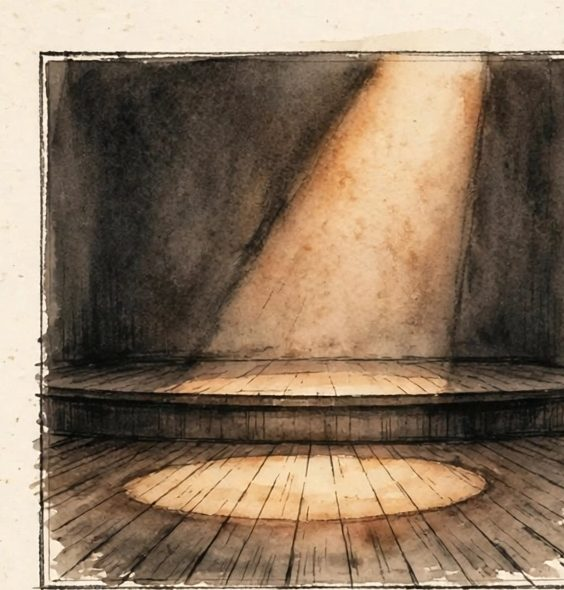
A single spotlight holds an empty stage floor in its circle of light.
The missed train that would have crashed. The job refused a month before the firm folded. The stranger not married, the road not taken in the fog — in the hero version these are not accidents but destiny clearing its throat, and the teller moves through them the way a guide moves through a cathedral, pointing out the design. At the time, of course, there was no design visible: it was Tuesday, it was raining, the decision was made with a headache on partial information. Destiny is a retrospective genre. It can only be written afterward, by a teller who knows how the chapter ends and enjoys the knowing.
The house does not begrudge the genre its pleasures, which are considerable. A life laced with destiny is a life that feels intended — and a person who feels intended walks differently from one who feels merely lucky, let alone one who feels overlooked by the management. The risk is subtler: destiny, once installed as the house style, begins to demand sequels. If the close calls were arranged, then the present confusion must also be an arrangement, and the teller can spend a bad year simply waiting for the reveal, declining to do the unglamorous steering that Tuesdays actually respond to. The cathedral is beautiful. One cannot live in it full-time; the heating is metaphorical.
So the close calls are kept in the program, told well, and believed in the way one believes a good map of a coastline — gratefully, with soundings allowed to change. Told once a decade, the genre is seasoning. Told nightly, it becomes a climate, and climates are hard to argue with from inside. The house serves the close calls at the proper strength: strong enough to feel chosen by, diluted enough to still make one's own decisions in the morning. A close call becomes destiny only in the retelling, and the retelling is allowed its weather.
29The Hero's Editing Room
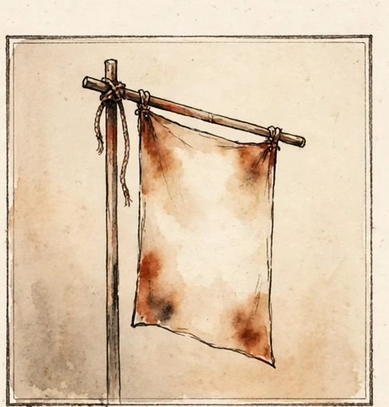
A blank banner flag hangs from its pole, waiting for weather to fill it.
Behind the hero version there is a small room, and this hall has at last been given the tour. It is not a sinister place. There is a long table, good light, and the calm of professionals: here the hesitations are trimmed, the motives are lit from a kinder angle, and the opposition — where the genre requires opposition — is cast from actors who were never quite as large as they have since become. Luck is reclassified as foresight in a drawer marked, without embarrassment, HOUSE STYLE. The editor looks up from his work without guilt. Arrangement, he will tell you, is not the opposite of truth; it is truth's wardrobe department.
Every editor works to a brief, and the hero's brief is not deception — it is emphasis, ordered by a client who must be able to recognize himself in the result and be heartened by it. Under that brief, some facts are simply unusable, and they are carried out the back of the room in silence: the help received, which the genre cannot price; the opponent's good point, which complicates the third act; the years in which nothing heroic occurred at all and the hero was, honorably, asleep. The house has stood in the doorway of this room and found nothing to prosecute. It only asked for a copy of the inventory of what leaves by the back door.
For the arrangement is a kind of argument, and arguments should know their own exhibits. The hero version argues that I was, on balance, the author of my better days; the discarded footage argues something more interesting and less tidy. The inventory, once requested, is seldom as damning as the editor feared. It is mostly help, luck, and long plain stretches — the very materials, properly lit, out of which the most durable version of any life is eventually cut. Nothing in the editing room is false; it is only arranged, and arrangement is a kind of argument.
30What the Hero Version Protects
It is worth asking, in a level tone, what the hero version is for — because it is certainly for something, and the answer is not vanity. The hero version protects morale on the days when the evidence is thin. Every life has such days in convoy: the application unanswered, the diagnosis pending, the friend gone quiet. On those days the register's plain entries will not do the one job that matters, which is getting the teller through the night with his willingness intact. The hero version does that job. It is a winter garment, heavy and unfashionable and absolutely not to be mocked by anyone who has worn it through a February.
It also protects the future, in a way the auditors took some time to appreciate. A person who believes his own trailer — who has heard, in the hero cut, the suggestion that his story is the kind in which attempts are made and sometimes crowned — will attempt the next thing. A person screening only the prosecution's version will not. The hero version is therefore not a decoration on a life but a piece of its machinery, closer to a starter motor than to a medal. This hall, which is suspicious of all machinery that runs unexamined, nonetheless declines to remove it, and confines itself to servicing it: a little less trumpet, a little more fact in the fuel.
Let the hero keep his post, then, with his budget audited and his charter renewed annually in plain language. Understood so, its maintenance becomes ordinary housekeeping rather than vanity: the lamp trimmed, the draft oiled, the morale kept in working order for the winter that is always, in some quarter of a life, in progress. The house, which has strong opinions about unexamined machinery, has none at all about a lamp that is honestly kept. The hero version is not there to deceive the world; it is there to get the teller out of bed.
The Story Desk
One desk receives all correspondence for this fireside — questions, corrections, greetings, and word of any tale of yours that has lately changed its ending, or refuses to. It is read in the order it arrives.
31The Hero Is Not a Liar, Only a Publicist
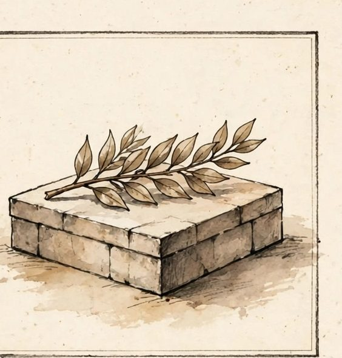
An empty plinth stands in the garden, a laurel branch laid across its top.
The doctrine of this hall, applied to the hero, can be stated as a correction of job titles: the hero is not a liar, only a publicist. The distinction is real and the house insists on it. A liar invents; a publicist selects. The hero version's raw material is genuine — the deeds happened, the race was run, the sentence was, eventually, said. What the publicist supplies is emphasis, sequence, and light: which deed opens the brochure, which year is described as formative, which failure is omitted from this edition as not representative. Nothing on the page is fabricated. Everything on the page has been arranged by a man with a client, and the client is me.
Publicity is an honorable trade and an expensive one, and the expense is where the house's audit finally lands. The hero version must be maintained: the old victories refinanced, the record defended against late evidence, the narrative protected from Tuesdays that do not suit it. A person can spend a surprising portion of a life's energy as his own press office, issuing corrections to a public of six relatives and one dog. And the deeper cost is epistemic — the publicist, consulted often enough, becomes the household's source of news, and the teller loses the habit of the unedited feed, in which help received and luck enjoyed are also part of the record.
Retirement, when it comes, should therefore be conducted with the courtesies of the profession: thanks given, portfolio kept, no denunciations. The clippings remain true. The client remains larger than them, and considerably more interesting, which is what the press office was founded to conceal and ended by proving. His successor, if one is appointed at all, works to a different brief: fewer releases, longer silences, and a standing instruction that the client's help received and luck enjoyed are also fit to print. The brochure gets thinner over the years and, by every account at the fireside, better. A publicist can be retired with thanks; his clippings remain true, and his client remains larger than them.
32Applause in the Hero Version
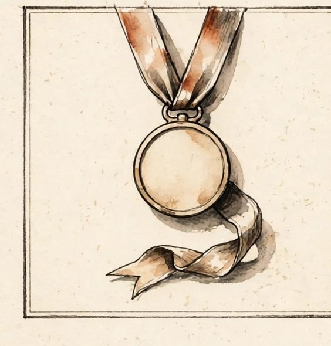
A medal on a ribbon hangs against the wall, its disc left blank.
In the hero cut, the applause is mixed louder than it was in the hall. The dinner where my remark landed adequately is re-screened with better laughter; the prize that was announced to a room arranging its coats is remembered to a room transfixed. This is the publicist's oldest liberty, and the house allows it a longer leash than the others, because applause is the least checkable of all materials and the most perishable — nobody's archive holds the actual sound. If memory is going to renovate anything unobserved, it may as well be the clapping.
Applause remembered is therefore applause half-invented, and there is less harm in admitting it than in any other quarter of the register. The harm enters only when the applause is asked to testify — when the warmth of rooms long dispersed is subpoenaed as evidence of worth, and the teller sits waiting for a verdict from an audience that has gone home, changed its name, and forgotten the evening entirely. Half the disappointments of middle life are in that waiting room. The applause was weather, not judgment; it belonged to the night it fell on, and it has rained elsewhere since, on people equally deserving and equally temporary.
So the hero version may keep its soundtrack, turned up, on the express condition that it is filed under music rather than under minutes. Enjoyed as weather, it warms; entered as evidence, it bankrupts. Heard that way, it can be enjoyed without bookkeeping — no ledger of who clapped in which year, no auditing of the silence that followed. The evening keeps its warmth, the register keeps its proportions, and the hero may bow, once, to a room that has kindly agreed to be remembered kindly. Take the applause as weather, pleasant while it lasts, and never as the deed to the house.
33The Hero Grows Old
The most hopeful editorial fact in this whole hall is that the hero ages better than the teller expected. In youth the hero version is all trumpet and posture, allergic to context, furious at footnotes. But give the same editor forty years of material and his style matures almost without instruction. The deeds stay in the film — he is not sentimental enough to cut his own best scenes — but the commentary changes key. Luck is allowed back into the credits. The opponents shrink to human size and become, some of them, almost sympathetic. The hero himself is discovered, in the later reels, to have been frightened quite often, and the discovery is presented not as a scandal but as the plot.
This is not the prosecution winning; it is a better cut being made by a calmer man. The old hero wants different things from the story than the young one did. Youth needed proof; age prefers company. The race is still won in the telling, but the telling now lingers on who was at the finish line, and what was eaten afterward, and the victories lengthen less because they are needed more as warmth than as evidence. An editor who once cut every hesitation now restores one or two on purpose, the way a portraitist restores a scar — because by now everyone at the fireside knows it is there, and the face is better with it.
The house keeps the older cut in the place of honor, scratches and all, and recommends the patience it teaches: the version you are stuck with at thirty is not the version you will die with, provided the editor is allowed to keep working. The prosecution, watching this development from across the corridor, is said to be unsettled by it — an editor who no longer needs to win is an opponent its own machinery was never designed to convict. The house files that, too, under the advantages of keeping the chair warm for fifty years. The hero who grows old gracefully trades the trumpet for the armchair and loses nothing but noise.
34When the Hero Version Tires
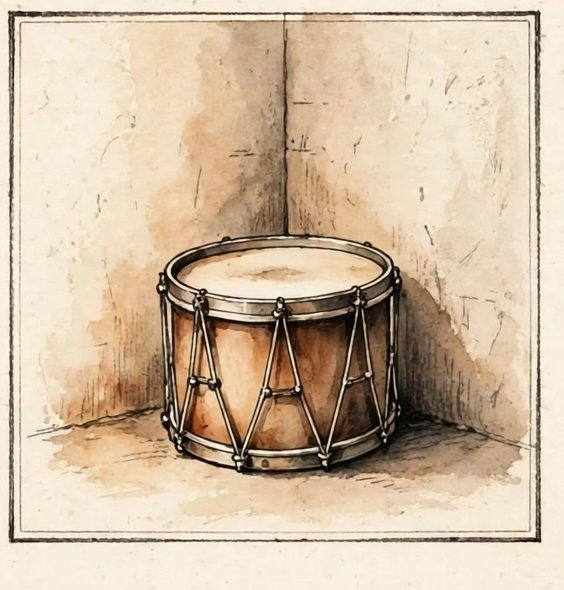
A drum rests against the wall, its sticks laid across the head in silence.
Some evenings the production simply cannot be mounted. The hero version, for all its economy, requires a company — lighting, score, a teller willing to operate the trumpet — and on the evenings of real exhaustion there is no company to be had. The set stands lit and empty: the victories are still true, the laurel still exists somewhere, but nobody has the strength to narrate at that altitude. Beginners in this discipline mistake such evenings for the truth arriving at last, stripped of makeup. The house knows better. A version that cannot be screened is not thereby refuted; it is only off for the night, like a theatre dark on Mondays.
What fills the vacancy is instructive. It is not, usually, the prosecution — that studio also needs energy, and grievance at full production value is expensive to stage. What fills it is the quiet self, unedited, doing the evening in a lower key: soup, a chair, the day summarized in one flat sentence and put away. These unstoried evenings are the register's ballast, and a life with enough of them develops a tolerance for the days when no version, heroic or otherwise, can be raised. The person does not disappear when the narration stops. He becomes, if anything, easier to find, like a house when the music is turned off.
So the dark evenings are entered in the register without alarm and without correction, as weather. The hero will be back at his post by the weekend, rested and slightly less loud, which is all anyone ever asked of him. Nothing needs rescuing on such evenings, and nothing needs announcing either. The register simply turns its page, the fire is left to its embers, and the household sleeps in the charge of the one resident who never required a version of anything in order to be home. When the hero rests, the person does not vanish; he merely stops performing for an audience of one.
35A Kinder Cut of the Same Film
A triumphal arch stands in a quiet landscape, swallows circling over it.
The footage of a life cannot be re-shot, but it can be re-cut, and the kindest discovery in this hall is that the same film supports a kinder edit without a single fact removed. In the kinder cut the motives are given their context — the sharp word is preceded, at last, by the week that produced it. The failures are lit by circumstance instead of by interrogation lamps. The other people, released from their casting as obstacles, get their close-ups and their reasons. Nothing is pardoned, exactly. Everything is situated. The film runs the same length, and the audience leaves it able to breathe.
Kindness in editing is not softness, and the house guards the distinction carefully. Softness cuts the scene; kindness keeps the scene and changes what the scene is finally for. The record of the bad year, kept whole, can be the story of a disgrace or the story of a convalescence, and the facts are identically the facts in both — the difference is in the cutting room, in what the film is assembled to prove. A prosecutor assembles to convict and a publicist to acquit, but there is a third chair in the room, rarely used: the editor who assembles to understand, and finds, in the same footage, a person instead of a case.
This cut is the one the hall finally recommends for regular screening — not because it flatters, but because it is the only version in which the teller can actually live, year-round, without either trumpet or dock. This is the cut, incidentally, that other people recognize. Friends who sat through the prosecution's version for years report that the kinder edit is the first one that sounds like the person they actually know — which suggests the editor's third chair was never a luxury. It was the seat with the best view of the film all along. A kinder cut changes no fact; it changes only what the facts are finally for.
36The Hero, Retired to a Smaller Role
The mature arrangement, when it comes, is not a dismissal but a recasting. The hero keeps a role in the household repertory — for ceremonies, for grandchildren, for the mornings when nothing less will get the day started — but he no longer plays every part, opens every door, or narrates every scene from the center of it. Younger men are sometimes scandalized by the demotion. The hero, consulted privately, is relieved. The lead in every production is an exhausting contract, and he had begun, in recent seasons, to forget his lines and improvise badly in the serious scenes.
Retired to a smaller role, he becomes unexpectedly good company. Off duty, he can afford the truth about the footage — which parts were luck, which opponents were magnificent, which victories he no longer bothers to lengthen because the grandchildren prefer the one about the dog. He is quotable now instead of loud, and his entrances, being rarer, land better. The house has seen this recasting in many registers and records it as one of aging's few unambiguous promotions: the same actor, in the part he was actually suited for, no longer required to hold up the entire theatre with his shoulders.
So the hero is given his chair by the fire — a good chair, with a cushion, in the light — and the register notes the new billing without a single unkind word. And on the rare evenings when the production is mounted in full — a crisis, a wedding, a grandson asking for the one about the race — he rises from the chair, delivers the old performance entire, and sits down again to general satisfaction, his exactly like everyone else's. The hero in a smaller role is not diminished; he is, at last, accurately cast.
37The Villain Version
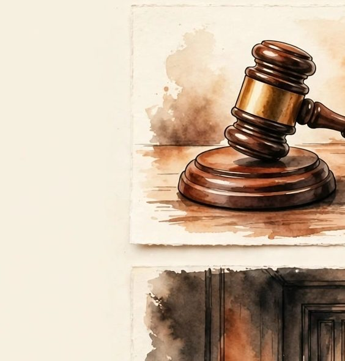
A judge's gavel rests on a dark desk in a pool of lamplight.
Across the corridor from the hero's studio, in the same building and under the same management, there is another production office, and it works nights. It produces the villain version: the cut of my life in which I am the problem. The footage is the same footage — it is worth repeating that, because the villain version's authority depends on nobody asking. Only the lighting is different. From this office, every scene is lit from below; the kindnesses are read as strategy, the failures as character, and the ordinary mixed motives of a Tuesday are developed, in the darkroom, into a portrait of the accused. It screens, in most lives, more often than the hero's cut, and to fuller houses.
The villain version has its own distinguished history. It is usually the older studio — established in childhood, in some cases, by critics who have long since left the profession — and it retains founding staff: phrases in a parent's cadence, a teacher's verdict, the caption installed before the register's first personal entry. Its prestige is such that its releases are reviewed, by the teller himself, as documentaries, while the hero's are dismissed as publicity. The house has examined both studios' charters and finds the asymmetry unearned. They are the same kind of enterprise, with the same tools and the same client.
So the villain version is entered in this hall's program like any other production — to be watched, audited, and discussed in daylight, neither obeyed nor suppressed. Its audiences are asked the same question this hall asks of the hero's: not whether the film is enjoyable, or even whether it is well made, but who chose this evening's program, and whether the choice was ever actually put to a vote. In this house, programs are chosen nightly, and they can be changed nightly. The villain version is a genre, like the hero's — and a genre is a choice, not a sentence.
38The Story Where I Am the Problem
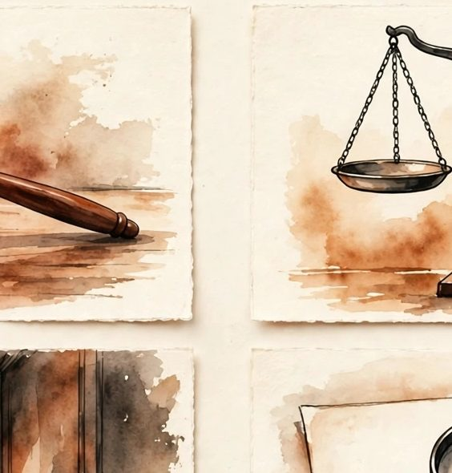
A pair of balance scales tips hard to one side on the prosecutor's desk.
In this telling, every road in the life leads back to my fault. The reorganization, the weather of the marriage, the friend's long silence, the market, the rain on the day of the move — all of it is rerouted, by diligent editing, to the same address. Other people appear only as witnesses; their choices are weather, mine are climate. It is a remarkably complete theory, and it has the prosecutor's favorite property: it can never be embarrassed by a new fact, because every new fact arrives pre-assigned. The file was full before the evidence came in. What looks like humility is, structurally, a closed system.
The house has learned to listen for the flattery hidden in this story, because there is flattery in it, of a dark and serviceable kind. To be the cause of everything is still to be the center of everything. The story where I am the problem preserves, in negative, the hero's favorite arrangement — a world organized around my agency — and it spares the teller the genuinely frightening alternative, which is that much of life is unbothered by him entirely: that the rain fell for its own reasons, that the friend was silent from grief and not from indictment, that some afternoons are simply not about the accused. Omnipotence, even guilty omnipotence, is a comfort. That is why the genre survives its own unpleasantness.
The defense, when it finally speaks in this hall, makes only one submission, and it is statistical. The submission is statistical, but its effect is not. The first afternoon the accused is permitted to be merely a contributing factor — one cause among several, some of them weather — the whole prosecution loses its architecture, and the court, to its own surprise, adjourns early and in something resembling good humor. It is the closest thing to mercy that arithmetic has ever offered the accused. A story in which I am always the problem is as vain as one in which I never am.
39The 3 A.M. Prosecution
The prosecution prefers the night shift, and its procedure, while flawless in form, is a scandal in practice. The charges are read at three in the morning, when the defense is asleep, the witnesses are unreachable, and the accused — who is also the judge, the jury, and the court reporter — is in the worst possible condition to evaluate evidence. Old exhibits are produced without their dates. Sentences are drafted before the hearing concludes. By dawn the court rises, having convicted on a record that no daylight session would have admitted, and the accused goes to make tea carrying a verdict he does not remember appealing.
The house does not dispute that the prosecution sometimes has a case. Things were done and left undone; words were said in the wrong tone in the wrong year; the file is not empty. What the house disputes is the venue. Night is when every genre exaggerates and this one most of all, because guilt, uniquely among the emotions, sounds more reasonable the worse the light is. The same evidence produced at breakfast — dated, contextualized, with the defense rested and represented by the whole of the life and not its worst hour — supports, in most cases, a modest finding: some fault, some repair, no catastrophe. The prosecution knows this. It is why it never sits at breakfast.
The rule the register keeps about this court is therefore procedural rather than merciful, and it is posted where the night clerk cannot miss it. The rule does not acquit anyone; it only moves the sitting. Cases with genuine merit survive the transfer easily, and are usually improved by it — heard, at last, by a court in which the accused is also allowed, as is customary in better jurisdictions, to have slept. Breakfast, unglamorous and punctual, remains the highest court this house recognizes. No verdict reached at three in the morning has ever survived a fair breakfast.
40Evidence, Carefully Selected
A magnifying glass rests over an open file, the rest of the desk in shadow.
The prosecution's method deserves the respect due to any effective instrument: it is selection. The file it carries is genuine — every exhibit in it happened — but it is curated with a discipline the publicist across the corridor can only envy. The remembered failure is exhibit A through Z, reproduced in facsimile; the forgotten kindness, the decade of ordinary reliability, the apologies made and accepted — these are not denied, exactly. They are simply never in the file. A court that hears only the exhibits is not a corrupt court. It is something more dangerous: a punctual, well-lit, entirely sincere partial one, arriving at true conclusions about a fraction of the record.
Selection is the same tool the hero's office uses; the studios share a supplier, and the difference between them is only which drawer gets opened in the dark. This is why arguing with the prosecution fact by fact so rarely acquits anyone. Each fact, examined, is true. The falsehood lives entirely in the table of contents — in what the archive was asked to bring. The defense that finally works is therefore not rebuttal but subpoena: the whole register brought in, the good years entered with the bad, the witnesses for the accused permitted to be as numerous and as dull as the truth usually is. Courts are not impressed by dullness. Registers are made of it.
So the hall's finding on the prosecution's evidence is entered without anger, as a point of law for the household's future sessions. The register, fully subpoenaed, tells a longer and duller and considerably more merciful story, in which the accused appears as what most people are in most archives: a minor character in several tragedies, a walk-on in many comedies, and the sole author of almost nothing. The prosecution is invited to read it in office hours. Carefully selected evidence can convict anyone of anything, which is precisely why the court adjourns.
41The Villain's Monologue
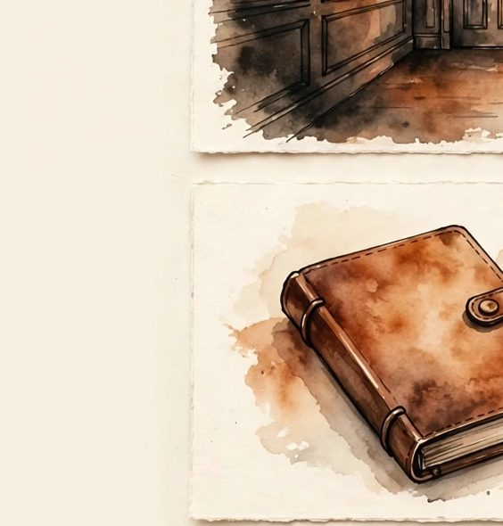
A magnifying glass rests on a blank page, enlarging nothing.
Every prosecution keeps a set speech, and the villain version's narrator knows his by heart. It begins, usually, at three in the morning, when the court is empty and no counsel for the defense would dream of attending. The voice does not stumble. It has the catalogue complete — the failures in their order, the witnesses' names, the exact wording of the letter that should never have been sent. A monologue so polished is not composed in the moment; it is performed from a script worn smooth by years of nightly rehearsal, and the Story Desk keeps a copy in the drawer, the way one keeps the program of a play one has seen too often.
Notice the craftsmanship, for it is considerable. The monologue speaks in absolutes — always, never, everyone, no one — because absolutes cannot be cross-examined; dates can. It arranges its evidence in the order of shame rather than the order of occurrence, so that a folly of nineteen stands adjacent to a lapse of last spring, as though no life had been lived between them. And it permits no interruption. That is the defining property of a monologue: the other chair stays empty by design. A dialogue might reach a settlement; a monologue is built to reach only its final line, which it has known since the beginning. The audience of one is expected to sit still for all of it.
The Storykeeper's counsel is not to shout the speech down; shouting is still attending the performance. It is to hear it as a performance — to notice the rehearsed cadence, the familiar scenery, the actor's trick of lowering the voice at the verdict. Heard that way, the monologue loses none of its sentences and most of its authority. The facts in it can be dealt with in daylight, by the desk, in prose. The music around them can be allowed to finish and fade. A speech delivered nightly to an empty room is still only a speech.
42Old Mistakes in Leading Roles
The casting of the villain version would puzzle any honest casting director. In the leading roles, billed above the title, stand mistakes of twenty and thirty years ago — the foolish letter, the cowardly silence, the door closed in a frightened season. Around them, uncredited, moves the entire supporting company of a life: decades of work done competently, kindnesses performed without witnesses, promises kept at cost. The old errors have star billing in a production they no longer have the strength to carry, and nobody at the Story Desk can remember who signed their contracts, or when, or on what evidence they were renewed each season.
The explanation is partly economy. Old mistakes are available at short notice, fully memorized, and undemanding; they never ask the teller to learn new material. Newer evidence — the long record of the person he has since become — would require research, and the narrator, like all of us, prefers the repertoire he can perform in his sleep. There is also this: a leading role flatters even its victim. To star as the villain is still to star. The teller at the center of a catastrophe is, at the very least, at the center — a position the ego will accept on any terms the management offers.
But a leading role is an assignment, not a life sentence, and assignments in this theatre are made nightly by a staff of one. The Storykeeper suggests no violence to the repertoire — merely a gradual recasting, in which the old mistakes are honored as veterans, given smaller and truer parts, and allowed at last to play character roles: the warning, the lesson, the scar with its map. The production improves immediately. Not even — the house insists on this clause — the actor who wrote it. No actor is obliged to play the same part for fifty years.
43The Villain Version Also Protects Something
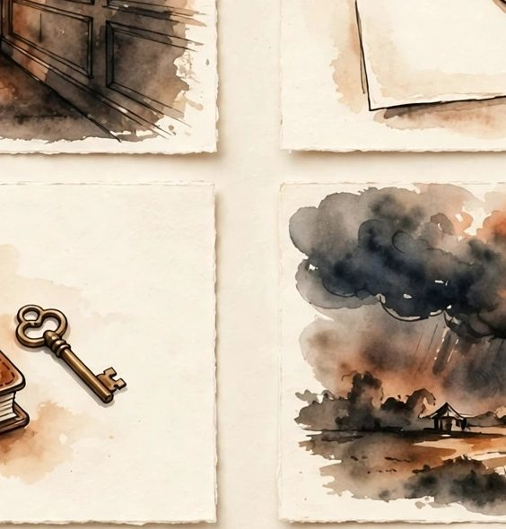
A locked diary lies on the desk, its key resting openly beside it.
The Story Desk is scrupulously fair, even to the prosecution, and so it asks what the villain version was hired to do. The answer, entered in the register without irony, is protection. If the teller convicts himself nightly in private, no stranger's accusation can ambush him in public; the blow has already been struck, by a friendly hand, at a chosen hour. If he expects the worst of himself as a matter of policy, then disappointment loses its favorite weapon, which is surprise. The monologue, for all its cruelty of phrasing, began as a sentry's walk — a rough guard posted at the gate of a younger and more frightened life.
It protects a second thing as well: it promises, in its severe way, that the old mistakes will not be repeated. The harsh retelling was meant to function as a fence — flinch here, it says, and you will not wander here again. There is even a kind of pride folded into the arrangement, and the Storykeeper does not mock it. Better, the teller concluded long ago, to be the villain of the piece than its fool; guilt, however uncomfortable, at least leaves the accused holding the pen. To have authored one's failures feels, at three in the morning, uncomfortably close to being in charge of them.
None of this acquits the methods. A sentry who fires on the household has misunderstood his orders, however gallantly he first took up the post. But it changes the teller's posture toward the voice: from defendant to employer, reviewing a contract that has run long past its term. The house keeps both judgments in the same entry and declines to strike either. The desk's fairness is not a trick of temperament; it is the only audit the prosecution has ever genuinely feared — one that begins by conceding, on the record, what the accused voice was originally for. What began as protection deserves to be thanked for its service. What continues as prosecution deserves, in equal measure, to be reviewed.
44Cross-Examining the Prosecution
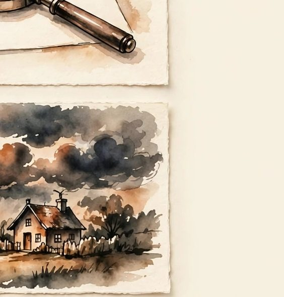
Storm clouds gather over a small house whose windows stay warmly lit.
One season, the teller does something unprecedented in the long history of the case: he stays in his chair and asks the prosecution a few questions of his own. Not in anger — anger still accepts the courtroom. He asks the way the Storykeeper asks, with a pencil, in daylight, almost with courtesy. When, exactly, did this happen? How many times — every time, or twice? Who else was standing in the room, and what were they carrying of their own? The monologue, which has never in its career been questioned, discovers that it does not care for the experience.
Cross-examination is a modest art with immodest effects. Under it, the absolutes that gave the speech its music dissolve into dates, and dates are mercifully unmusical. Always becomes a Tuesday in one hard year. Never becomes twice, both times in exhaustion. Everyone becomes two people, one of whom has since apologized, or died, or been forgiven by everyone concerned except the narrator. The evidence, carefully selected for so long, turns out to have been selected — which is not the same as false, but is a very long way from being the whole record.
The case does not vanish under questioning; the Story Desk keeps honest books, and some counts in it are true and remain true. But it shrinks to human dimensions, which is to say it becomes a story again instead of a climate. The teller finds he can hold it in one hand. He finds, further, that he can set it down — on the desk, between the teapot and the register — and attend to the rest of the evening. The house counts this among its quietest victories. Few verdicts survive being asked for their dates.
45The Difference Between Guilt and a Genre
The Storykeeper keeps two ledgers that the narrator is forever confusing, and the whole of this hall may be the effort to keep them apart. In the first ledger stands guilt, which is a fact with a date on it: this was done, by me, on that occasion, and it cost that person something real. In the second stands the genre — a style of telling that can be laid over any material whatsoever, the way a minor key can be laid over any tune. Guilt belongs to an act. A genre belongs to an atmosphere. The register suffers whenever the second is allowed to sign for the first.
The practical difference is everything. Guilt can be answered. It has remedies older than the estate: apology, restitution, changed conduct, the long penance of simply behaving otherwise until the account is believed closed. A genre cannot be answered at all; it can only be continued or discontinued, like a subscription. Guilt says, precisely, this act. The genre says, expansively, this kind of person — and it is always the longer sentence of the two, because it has no date on which it can be served and finished. The teller who mistakes his genre for his guilt will serve both, concurrently, forever.
Sorted honestly, the two stop impersonating each other, and the relief in the house is palpable. What is guilt goes to the desk for repair, in prose, with names and dates. What is genre goes to the fireside for review, as a matter of taste and habit rather than of law. The Storykeeper enters both without flinching and without merging them. It is astonishing how much lighter the second ledger becomes once it is no longer being read aloud in the courtroom's voice. Guilt asks for a remedy; a genre only asks for another chapter.
The Story Desk
One desk receives all correspondence for this fireside — questions, corrections, greetings, and word of any tale of yours that has lately changed its ending, or refuses to. It is read in the order it arrives.
46Acquittals Happen Quietly
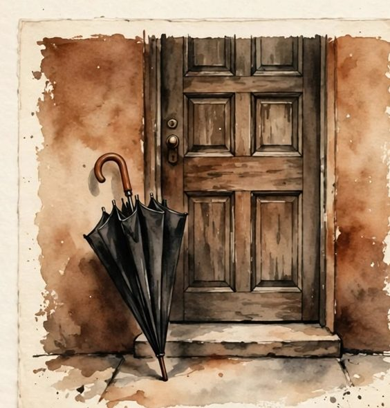
A mirror stands covered with a cloth, waiting in the quiet room.
No one is acquitted in the inner court with trumpets, a statement from the bench, or anything so satisfying as paperwork. The case simply stops being called. One season the monologue begins on schedule, clears its throat — and trails off, somewhere in the second paragraph, as though the actor had noticed the benches were empty. The teller waits for it to resume, out of long habit. It does not resume. Somewhere upstairs, in chambers, a file has been closed by hands that never announce themselves, and the only evidence is the silence where the summons used to be.
Acquittal, in practice, looks embarrassingly like ordinary life. The old scene arises — a name, a street, the particular light of that year — and is filed, without ceremony, under history rather than under evidence. The mistake can be mentioned at table without the temperature of the room changing. The teller hears his own voice describe the events in the past tense, and the past tense, that small grammatical mercy, holds. The Story Desk records these acquittals in pencil, without dates, because no one can say afterward when the case was dismissed — only that it has not been called in a long while.
This is why the estate distrusts dramatic absolutions, announced at midnight with resolutions and bonfires. The genuine article arrives the way weather changes — unannounced, cumulative, known mainly by its effects on the crops. The teller does not wake acquitted; he discovers, some ordinary Tuesday, that he has been living acquitted for months. The register accepts this quietly, as it accepts most true things. The chair by the fire is warmer than the dock ever was, and it has been occupied, unnoticed, all along. Mercy, in the inner court, is mostly a matter of the case no longer being called.
47The Villain, Seen From the Balcony
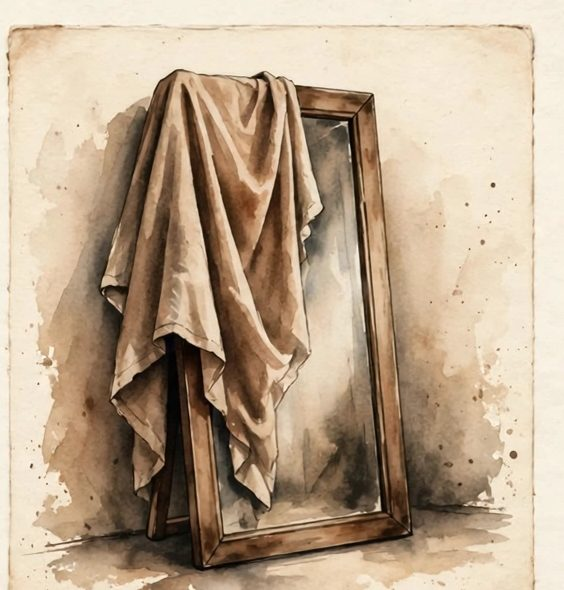
Far below the balcony, the trial goes on in miniature.
Every theatre keeps a balcony, and the Storykeeper — who has sat in all the seats of this house in his time — recommends it for the villain version above all other productions. The climb is short. The effect is immediate and faintly comic. From the balcony, the dreaded villain of the piece shrinks to his true theatrical dimensions: a figure in a coat two sizes too large for him, declaiming to rows of empty benches, taking his bow to a house that went home an hour ago. What filled the stage at ground level fills, from up here, exactly one scene.
Distance, the desk insists, is not denial. The balcony does not falsify the play; it restores the play's proportions, which the stalls conspire to destroy. The crime that seemed to occupy the whole evening turns out to sit in the second act, between long stretches the prosecution never mentions — weather, work, weddings, the unremarkable decencies of decades. Nor is the villain, at this range, even frightening. He is discernibly young. He is trying, with the materials he has, to be taken seriously by a world he has not yet learned is mostly not watching.
There is tenderness available from the balcony, which surprises every teller who climbs to it expecting only relief. The figure below is over-rehearsed, under-fed, and plainly exhausted by a part he never auditioned for. One wants to send down tea. The Story Desk encourages the impulse; it is the beginning of every honest retelling. The teller comes down the stairs slower than he went up, and the play is never staged in the old way again. No performance survives the balcony unchanged — that, the house maintains, is precisely what the balcony is for.
48Retiring the Prosecutor
The prosecutor is not executed at the end of this hall; the estate does not conduct its affairs that way, and in any case he has relatives in every department. He is retired. The ceremony is small and, the Storykeeper insists, sincere: a handshake at the desk, a formal word of thanks for the years of vigilance, and a pension — which in this house means his warnings are kept on file, honored, and no longer obeyed as orders. He seems, on the whole, relieved. Few men enjoy being feared by their own households, and he has been feared nightly for decades.
Retirement, here, is a practical arrangement rather than a sentiment. The prosecutor's genuine duties are reassigned before he leaves the building: the vigilance to the Storykeeper, where it is filed under care; the memory for dates to the register, where it belongs; the concern for consequences to the teller himself, who is, after all, the only member of the staff who was ever going to live them. What is not reassigned is the bench — the absolutes, the midnight sessions, the voice that confused a genre with a law. Those stay in the empty courtroom, gathering the dust they deserve.
Some nights, out of habit, the old man comes down and stands in the doorway of the courtroom, and the house has learned what to do: he is offered tea, and a chair by the fire, and the courtesy of being listened to as a guest rather than obeyed as a judge. He rarely stays long. Once or twice he has even been heard to laugh at the right places in other people's stories. It is the best retirement the house has ever arranged. An old prosecutor, thanked and seated by the fire, makes a surprisingly good listener.
49The Warning Tales
A lighthouse beam turns slowly over dark water.
The next hall of the house is shelved differently, and the Storykeeper lowers the lamps as he opens it, not from gloom but from respect. These are the warning tales — the stories whose whole purpose is a lowered voice and a hand on a gate: do not go down to the river in the dark; remember what happened the one winter; that road, that man, that signature, never again. They are told the way fences are built, one post at a time, by people who had seen what the fence was for and intended the household to survive its own curiosity.
They are, the desk notes, the oldest genre in the building — older than the hero's laurels, older than the prosecutor's bench. Before a family has epics it has warnings, because warnings are what love sounds like when it is in a hurry and slightly out of breath. The tales on this shelf were not composed; they accumulated, the way a path accumulates across a field, from single journeys undertaken in real weather. Behind nearly every one of them stands an actual evening, an actual loss or near-loss, and someone who came home determined that the household would not have to learn it twice.
For this reason the Story Desk honors the warning shelf before it audits it, and will not have the tales mocked by anyone who slept safely because of them. Questioning comes later in the hall, and gently. First, the register records what the warnings were: the earliest form of insurance ever devised, taken out by the frightened on behalf of the unborn. The premiums were paid in stories, at firesides, over years, and many of the policies are still quietly paying out. Every warning in this house was once somebody's act of love.
50The Story That Says "Never Again"
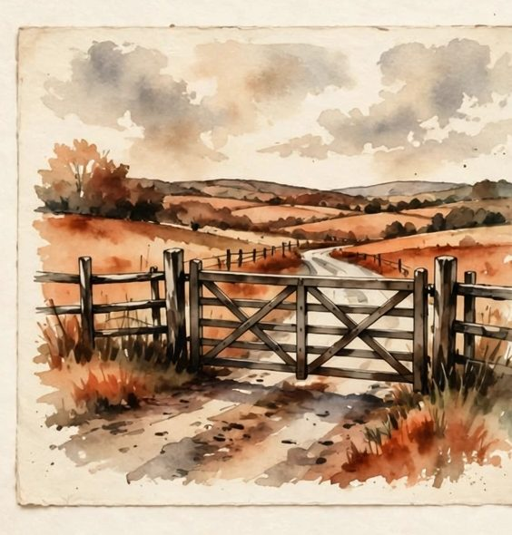
A fence and a gate close across a country road at evening.
At the center of the warning shelf stands its most famous volume, bound in the teller's own hand: the story that says never again. It is built like a lock. One terrible scene — the debt, the betrayal, the night on the ice — is set in the middle of it and retold at intervals for years, so that the hand will hesitate, by reflex, at the relevant door. The tale does not argue. It does not need to. It simply stands in the doorway of the future wearing the expression of the past, and nine times out of ten the future politely withdraws.
And the house is honest about the record: the lock has worked. There are signatures the teller never gave because the story stood behind his chair; roads he did not take in bad weather of several kinds; doors he closed early, on people and propositions alike, that later events proved well closed. The Storykeeper keeps these outcomes in the register beside the tale, in the same ink. A story that has repeatedly prevented harm is not a superstition. It is a tool with a service history, and tools with service histories are not discarded because a newer model has been announced.
But the desk adds one marginal note, in pencil, beneath the vow: it was sworn in a burning building. Vows taken in pain are honored in this house, and they are also reviewed in peacetime, because pain is a poor surveyor of the whole estate. The tale keeps its shelf and its honor; it is simply asked, at intervals, whether the fire it remembers is still burning. 'Never again' is a fine lock and a poor address. A lock is for a door; an address is where a life is lived. One cannot, the Storykeeper observes, take up residence inside a lock.
51Scars Narrated as Maps
Ask the Storykeeper about a scar — his own, or one of the house's — and he will disappoint anyone hoping for the story of the wound. He unfolds, instead, the map the wound eventually became. Here, his finger says, the road doubled back on itself. Here the ice was thinner than it looked, though it looked thin enough. Here a stranger appeared with a rope, and here is the turning the traveler missed, in the dark, that is obvious in every retelling. The pain is in the archive. What he keeps on the desk, for daily use, is the geography.
This, the desk maintains, is the warning tale at its best and most honest: not the injury rehearsed but the terrain recorded. A scar read as a map speaks of where, not of who. It can warn a traveler without indicting him, and it can be consulted by people who were not present at the original weather — which is the whole point of drawing it. Wounds, by contrast, are poor teachers and worse travelers. They insist on being felt; maps are content to be read. The house's preference, after long experience, is firmly for the version that can be folded and carried.
There is a test for whether the conversion has happened. If the story of the old injury still requires the teller to bleed a little in the telling, it is a wound with narration. If it can be told plainly, at table, to be useful — here is the ford, here is the season to avoid — then the scar has finished its long apprenticeship and taken up cartography. The Story Desk accepts such maps from all comers and files them where travelers actually look. A scar that has become a map has finished being an accusation.
52The Tale That Keeps Me From the Road
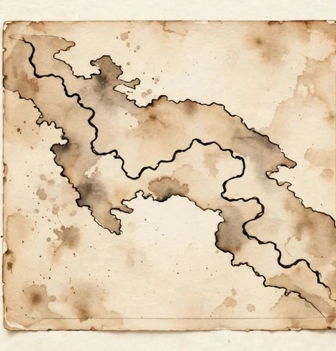
A scarred old tree stands in leaf beside a road rarely taken.
There is a road out of this valley that the teller has not taken in thirty years, and at its head, like a gatekeeper who has outlived several gatehouses, stands a story. The tale is of the one journey that ended badly — the breakdown, the betrayal, the weather — and it is told, whenever the road is mentioned, with the quiet finality of a clerk closing a ledger. The road itself has been re-surfaced twice in the interval. The teller has not been informed. Or rather, he has been informed, and the story has respectfully declined to update its files.
The odd thing, which the Storykeeper notes without triumph, is that the tale may be accurate in every particular and still be doing more than its duty. Roads change their character with the decades; bridges are rebuilt by people who were children when the accident happened; and the traveler the tale protects against is himself no longer available — he was twenty-six, and frightened, and driving on hope and bald tires. The story stands guard at the head of the road against a ghost, and turns away, with perfect courtesy, a man in his fifties who has learned to read weather.
The desk's remedy is modest, as its remedies tend to be. Not a demolition — the tale has earned its pension — but a reconnaissance: walk the first mile of the road, in daylight, in good company, and come home and tell the desk what is actually there. If the first mile is kind, the second can be considered next season, at the teller's own pace, which the house has never once hurried. Reconnaissance is not betrayal. It is how maps stay honest. A road is not responsible for the weather of one remembered journey.
53Warnings That Outlived the Danger
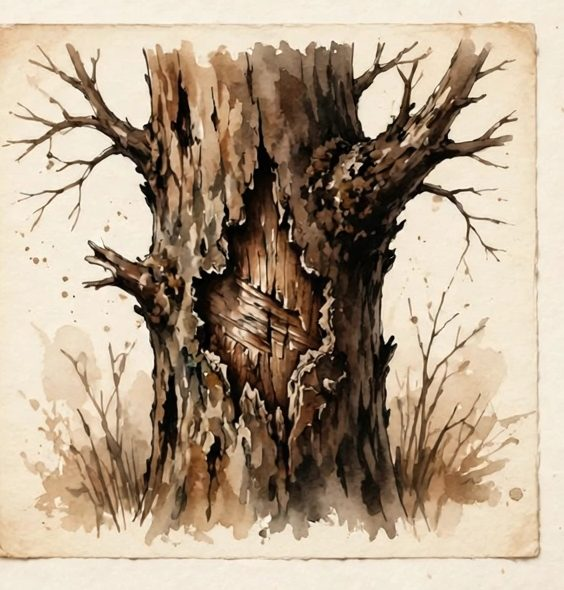
A gate rusts in a garden wall, the garden long opened elsewhere.
Some dangers have the decency to expire. The factory whose whistle governed the street closes and is demolished. The dog that terrorized the lane dies, unmourned, in extreme old age. The law changes; the debt is paid; the man leaves the country. But the warning — which is, after all, only a story — does not read the newspapers. It reports for duty at the usual hour, in the usual voice, and describes the world as it stood in the year of its composition, and the teller salutes it out of habit before he has remembered to check the date.
The register is full of these pensioned terrors, still drawing their authority. A generation may organize its evenings around a siren installed for a fire that burned out before its children were born. The Storykeeper's audit, when he conducts it, is embarrassingly simple, and he conducts it gently, because no one likes to learn that his vigilance has been guarding an empty field. Is the danger still on the register — or only the alarm? Is the road still closed, or only the story of its closing? The answers, entered in pencil, are frequently a relief disguised as an anticlimax.
Retiring an expired warning is not recklessness; it is bookkeeping, and the desk is firm on the distinction. The tale is not burned. It is moved to the archive shelf, with its date restored to it — told, henceforth, as history, which is what it always was, rather than as forecast, which is what it never was. The household sleeps better the first night than it expected to, and says so at breakfast with some surprise. The silence it leaves is not empty; it is available. An alarm that outlives its fire should be thanked, and then unplugged.
54The Story of the One Time
Every warning shelf in the house contains one slim volume that outweighs the rest, and its title, invisible but understood, is The Story of the One Time. Once — in one job, one marriage, one winter — the trust was betrayed, or the money vanished, or the ice gave way. The event was real. The Story Desk has verified the event and keeps its certificate. What the desk questions is not the event but its promotion: the way one occurrence, granted retelling rights in perpetuity, becomes the template through which all subsequent occasions are read before they are allowed to happen.
The statistics of a life are arranged unfairly against it, and the narrator is not to blame for noticing the pattern. A hundred uneventful crossings leave no narrative behind them; nobody tells the story of the bridge that held, the partner who stayed, the investment that merely did its work. The single disaster, by contrast, gets a chair by the fire, an attentive household, and a pension of retellings. It is not that the one time is overvalued. It is that the ninety-nine times are not in the room when the policy is written, and policies written by the only witness present tend to bear his signature rather heavily.
The desk's ruling is a matter of shelving, not of truth. The one time deserves its chapter — a full chapter, honestly told, with the weather in it. It does not deserve the whole book, and it certainly does not deserve to write the chapters in advance, in its own hand, for occasions that have not yet had the courtesy to occur. The Storykeeper returns the volume to the shelf at its proper size, smaller than its reputation and larger than its comfort. Once is an event. The story that makes it a law has edited the evidence.
55Fear Has a Good Memory and a Poor Imagination
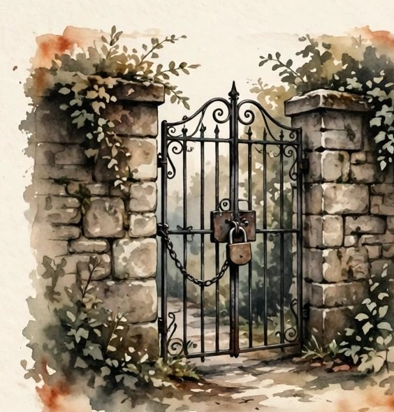
A lantern lights the same few yards of path it lit last year.
The title of this room is the Storykeeper's own, and he will defend it at the desk against all comers: fear has a good memory and a poor imagination. Its memory is archival in quality — it keeps the dates, the exact phrases, the quality of the light in the room where the bad news arrived, filed and cross-referenced beyond the dreams of any clerk. Ask fear what happened, in any year you care to name, and it will produce the document before you have finished the question. It is the most reliable witness in the building, provided the question is about the past.
Its imagination, by contrast, was never issued. Fear forecasts by replaying; that is the whole of its method, and it calls the replay a prediction, in a voice of some authority. It cannot conceive of an ending that is not in its archive. New people enter its stories pre-cast in old roles; new roads are assumed to be the old road in a coat. The Storykeeper, who respects the department's memory, has learned to route its memoranda accordingly: consulted on what occurred, believed; consulted on what will occur, thanked and quietly set aside, like a map of a coastline that has since been resurveyed by joy.
The imagination that fear lacks must be borrowed from elsewhere in the house — from hope, which is impractical but inventive; from humor, which arrives late and rearranges the furniture; from the balcony, where proportions live. The teller who borrows regularly finds his forecasts improving in both accuracy and temper. None of this dismisses the witness; the house keeps him on staff because his archive is real, and sometimes the past is the only map there is. Fear can tell you exactly what happened. It has never once known what will.
56The Locked Door in the Story
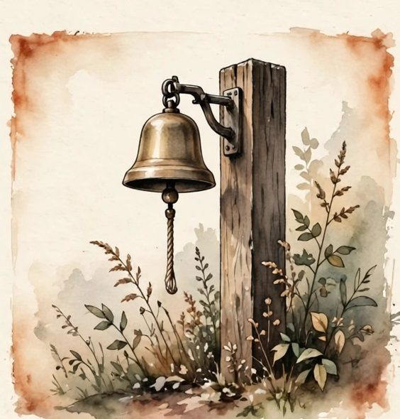
A heavy door stands locked in a stone wall, ivy at its edges.
Many of the warning tales share a piece of furniture, and the Storykeeper, walking a visitor down the shelf, points it out the way one points out a recurring actor. It is a locked door. Somewhere in the story there is a door that must never be opened — a subject, a city, a kind of love, a room in the family's own house — and the tale rarely explains the lock. The lock is the explanation. It is presented the way locks are presented in the world: as a fact of architecture, older than questions, not requiring a key because not requiring a reason.
The desk, which keeps locksmiths among its acquaintances, is fair to locks. Some doors in this house genuinely open onto drops, and the teller's hand was right to learn their handles by heart. The objection is narrower: a lock inherited without a key, a reason, or a memory of either taxes every corridor it stands in. Guests route around it for decades. Whole wings of a life go unvisited because the tale posted its furniture there in a frightened year and no one, since, has thought to ask the door what it believes it is guarding.
The house rule is therefore not that doors be opened; the Storykeeper has buried enough curiosity to staff a sermon on that subject. The rule is that the teller know what he believes is behind his locked doors — name it, date it, and file it, so that the lock is a decision and not a haunting. Beliefs, once filed, can be reviewed like any other entry, and some of them turn out to be guarding rooms that have been empty for years. A lock with a reason is a safeguard. A lock without one is only a habit with a key.
57When the Warning Becomes the Cage
A warning's success is measured, all its life, by what it prevents — and its failure begins on the day prevention quietly becomes the whole of the estate's business. The fence was built, in a justified season, around one dangerous corner: the debt, the road, the sort of man. Then, in years when no one was watching the builders, it was extended — around the garden, around the house, around the future itself. The teller wakes one decade to find that the perimeter is complete and that he is, technically, perfectly safe, in the way that things in storage are safe.
The symptoms, in this house, are detected in story form before they are detected in life, because story is how the teller thinks. Every new tale now arrives pre-warned, its ending supplied by the archive before its beginning has been heard. New people are cast on sight as risks, their scenes written from older scripts. The future itself is narrated exclusively in the past tense of the one time. The Storykeeper, reading the season's manuscripts, notices that the pile of stories about what must not happen has grown taller than the pile about what did — and the house, he observes, is a poorer library for it.
The remedy is not to tear the fence down in a festival of liberation; fences torn down in festivals have a way of being needed by Friday. It is to walk the perimeter honestly and ask of each stretch the auditor's three questions — what do you guard, is it still there, and what do you cost? Some stretches will stand. Some will come down post by post, in daylight, without ceremony. The house does not record a single case of a teller regretting the audit, though several regretted the decades before it. The saddest fences are the ones the prisoner keeps painting.
58Updating the Warnings
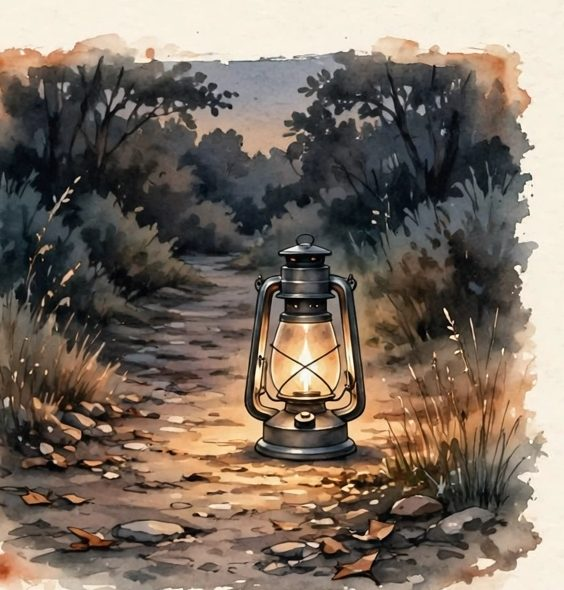
A pencil moves over an old page, revising in a lighter hand.
Warnings, like maps, carry dates, and the Story Desk — which has no revolutionary ambitions whatsoever — holds a quiet annual review. There is no bonfire. There is a table, a pot of tea, the register of warnings read aloud in the Storykeeper's driest voice, and three questions asked of each in turn, with the courtesy due to old staff. Is the danger real? Is it current? And is the price of obedience — the roads untaken, the doors unopened, the years — still a price worth paying for the protection it buys? The warnings, to their credit, answer honestly.
The outcomes sort themselves into three piles, as outcomes at this desk tend to do. A few warnings pass the audit unchanged and are re-inked with something approaching ceremony; the house still needs them, and says so. A larger number are amended in the margins — the road is open in summer; the door may be opened in company; the man is forgiven but not re-employed — and the amendments, being in the teller's current hand, carry the authority of a living signature. A small remainder are retired to the archive shelf, with their dates restored and the desk's thanks recorded beneath them in full.
Updating a warning is sometimes mistaken, by the teller's more theatrical inner departments, for betraying the younger self who posted it in a frightened year. The Storykeeper corrects the error with some firmness. The younger self posted the warning precisely so that the older one would survive to review it. The review adjourns with the register closed on its ribbon and the lamps left on in one corridor, for whatever the new year brings. A warning revised is not a promise broken. It is a map corrected by the traveler who survived it.
59Gratitude for Old Alarms
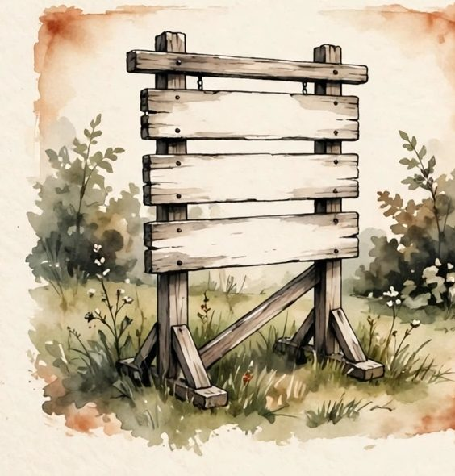
A polished alarm bell hangs silent above the mantelpiece.
The review ends, by house custom, in thanks — and the Storykeeper will not adjourn it on any other terms. Whatever their exaggerations, and the register records the exaggerations in the same ink as everything else, the old alarms stood watch through real nights. Some of them, on evidence the desk does not care to rehearse, are the reason there is a teller left alive and literate to conduct the audit at all. Gratitude is therefore not a courtesy extended to the warnings. It is a debt acknowledged, entered, and — as far as the desk is concerned — never quite discharged.
Gratitude is also what keeps the audit honest. Without it, the review curdles into the bonfire mood — the modern arrogance that mocks every fence it did not personally have to build and every sentry it did not personally have to feed. The Storykeeper has seen households purge their warning shelves in a spirit of emancipation and spend the following decade relearning, at retail prices, lessons the shelf had been holding wholesale all along. The alarms were staff. Overzealous, deaf in one ear, prone to ringing at cats — staff. The desk's reviews are conducted on that understanding, and are kinder and more accurate for it.
So the Storykeeper keeps one bell from the old system polished and hung above the mantel, where it is rung no longer and honored at every fireside. It catches the lamplight when the stories are told, which is its whole remaining duty, and it performs that duty beautifully. Visitors sometimes ask why it is not rung at dinner, and the answer — that some instruments retire into meaning what they once did in noise — is allowed to stand without further explanation. We do not mock the watchman because the war is over.
60A Warning Is a Story, Not a Law
The hall closes with its whole doctrine entered in one line of the register, and the Storykeeper asks that it be read slowly: a warning is a story, not a law. It has an author, and the author's name is known. It has a date, and the date is old. It has an audience — one frightened evening, originally — and a purpose, which was protection. Laws pretend to none of these courtesies. Laws claim to have no author, no season, and no appeal. The tales on this shelf, restored to their true category, recover all three at once, and are the better for it.
Treating a story as a story is not a demotion, whatever the prosecutor's office may whisper; it is a restoration of dignity. A story can be consulted at the desk, honored at the fireside, retold to the young with its date attached like a hallmark. It can be amended when the traveler survives it and retired when the road reopens. What it cannot fairly do — what it was never built to do — is sentence. Sentencing was the bench's trade, and the bench, the house notes with satisfaction, is currently unoccupied and gathering an honorable dust.
So the teller leaves the warning shelf in good order at the hall's end: the tales honored, the locks understood, the alarms thanked, the expired ones archived with their dates showing. The gate at the valley road still stands, and may stand as long as it earns its keep. And the Storykeeper, locking the hall for the night, enters the final line without emphasis, the way the truest entries are always made. Outside, the road runs on into the dark in both directions, open — as, on the evidence of the register, it has been all along. The warning keeps its chair by the fire. It simply gives up the judge's bench.
The Story Desk
One desk receives all correspondence for this fireside — questions, corrections, greetings, and word of any tale of yours that has lately changed its ending, or refuses to. It is read in the order it arrives.
61The Love Stories
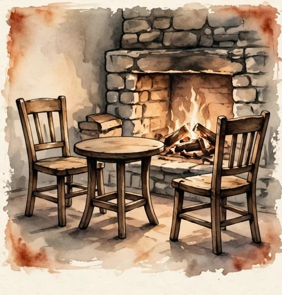
Two chairs and a small table stand close by the fire, the cushions still holding their shape.
The next hall is the warmest in the house, and the Storykeeper keeps its door unlatched, because everyone who enters it enters as a citizen rather than a case. These are the love stories — the tales the teller tells about who was loved, and how, and what it made of the telling. They are shelved apart from the heroics and the prosecutions, and the desk is strict about the shelving: a love story in this house is not evidence for anything. It is not the crown of the hero version or the crime scene of the villain's. It is a room with two chairs in it, and a fire that is nobody's argument.
Love stories are the most revised manuscripts in the building, and the desk makes no apology for the fact. They are retold at anniversaries, at gravesides, to children, to strangers on trains, to the ceiling at three in the morning, and no two tellings are the property of the same author. Details migrate. Dialogue improves — and worsens — with the years. A look exchanged across a platform acquires, across decades, the weight of a vow, and perhaps it always had it; the register does not rule on such questions. It keeps the versions, plural, in one folder, and labels the folder with both names.
What the house insists upon, entering this hall, is only a matter of temperature. These stories are to be told the way they were lived: in the present tense of attention, not in the past tense of verdicts. The people in them were not symbols, obstacles, or lessons wearing coats. They were, and remain, the point. The Storykeeper takes down the first volume with both hands. That, the desk observes, is not a flaw in the manuscripts; it is their condition, and it governs everything in this hall. Every love story is a draft held jointly, and one of the authors is always absent from the editing.
62How We Met, in Several Versions
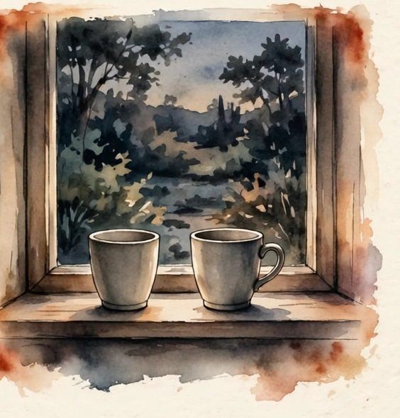
Two cups stand side by side on a windowsill in the morning light.
Every long love keeps several first chapters, and the versions disagree about everything except the ending of the scene, which is that it mattered. In his version, the meeting was an accident of weather and a missed train. In hers, she had noticed him three weeks earlier and arranged the accident with the patience of a general. The Story Desk keeps both manuscripts without attempting a merger. It has learned, over many households, that 'how we met' is not a report being filed but a duet being performed, and a duet harmonized into a single voice is no longer the piece anyone fell in love with.
The versions diverge most tenderly in the details each author protects. He remembers what she was wearing; she remembers what he said, and both are certain, and both, the register notes, may be right — memory being less a photograph than a portrait sitting, in which each sitter keeps the angle that flatters the light they were seen by. Strangers at the fireside are sometimes scandalized by the discrepancies, and ask which version is true, with the confidence of people who have never been in one. The Storykeeper's answer is a house rule and is not negotiable: the true version is the one being told.
There is even a sense — he advances it gently, late in the evening — in which the plurality is the fact. A meeting that can sustain two honest tellings has more room in it than a meeting flattened into one agreed account, the way a chord has more room than a note. The versions lean against each other in the folder like the two cups on the sill. The desk returns both manuscripts to the shelf unmerged, and counts the shelf richer for it. How we met is not a question the story answers. It is a place the story keeps.
63The Story I Tell About Why It Ended
If the love stories have the most versions of any manuscripts in the house, their final chapters have the most authors — because the story of why it ended is told, in the years after, by a teller who was also a character, and grieving, and not in possession of the other manuscript. The Story Desk handles these chapters in a cloth binding and a level voice. They are not lies. They are, nearly always, true in the way a coastline is true on a map drawn from one shore: accurate about the water's edge, silent about the other side of the world.
The reasons migrate as the teller heals, and the desk has learned to read the migration as the chart of the healing itself. In the first edition, the cause is singular and enormous, and fits on an indictment. Later editions admit weather — timing, money, distance, the slow attrition of two people editing each other into strangers. The final edition, when it comes, is usually the shortest and the saddest and the fairest: we were not, in the end, the people the story required us to be. None of the editions is retracted. They are kept in order, like growth rings.
What the house forbids — its only absolute in this hall — is the retroactive spoiling of the earlier chapters to make the ending look inevitable. The ending does not get to re-edit the beginning's evidence. What was happy was happy, and the register keeps it in the same ink as the loss. The Storykeeper closes the volume on its ribbon and files it where the lamplight reaches, neither in the courtroom nor in the dark. The story of why it ended is a chapter, not a solvent. It explains the last page; it is not permitted to dissolve the book.
64Grief Edits Slowly
A bridge crosses a river at dusk, its far shore dim in the mist.
Every other manuscript in the house can be revised at the speed of thought; the grief manuscripts revise at the speed of seasons, and the Story Desk has learned not to send reminders. Grief edits slowly. It works the way water works on stone — not by argument but by attendance, returning to the same paragraph night after night until the paragraph's edges are, almost imperceptibly, different. The teller who tries to hurry it produces only a tidier grief, which is not the same thing as a truer one, and generally has to be unedited again later at greater cost.
The slowness has a logic the desk respects even when the teller cannot. Grief is the only editor in the building who works without a deadline because it is editing two manuscripts at once: the story of the person who is gone, and the story of the person who remains, and the second cannot be finished first without lying about the first. Whole passages must simply be carried, unedited and heavy, from one year to the next, the way furniture is carried between houses by people who are not yet sure where anything goes. The register records these seasons without commentary. Commentary would be obscene.
And the editing does happen — that is the entry the house most wants kept against despair. Not all at once, and never on schedule, but observably: a story that could not be told in the spring can be told in the autumn with only one stop in it. Then with none, and a hand left calmly on the page. The Storykeeper, who has watched the process in more households than he will number, trusts it the way he trusts weather. Grief edits slowly, and it does not edit forever. The last page it reaches is left, by its own choice, exactly as it was written.
65The Version I Tell Strangers
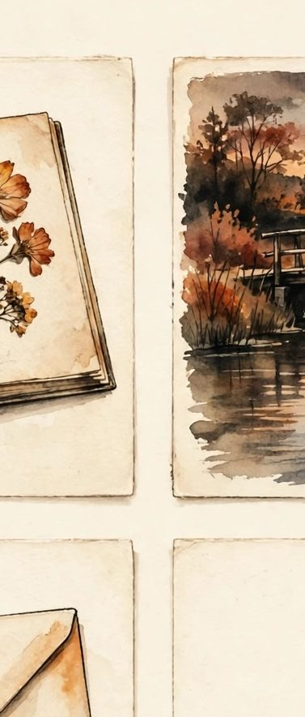
A sealed envelope rests on the desk, addressed in a careful, public hand.
Every love story in the house has a public edition, bound for strangers, and the Story Desk keeps it by the door where it can be produced without searching. It is short. It has clean edges. It gives the dates, the city, the respectable outline — we met, we were happy, it ended — in the tone of a man reading a railway timetable, and it ends the conversation with the efficiency of a well-made door closing. Strangers, who have not earned the long version and mostly do not want it, receive the public edition with gratitude, and the teller survives another dinner party.
The desk is firm that the public edition is not a falsehood. Abridgement is not lying; a map is not a lie about the coastline for declining to include every stone. What the stranger is owed is courtesy, not archives — and what the story is owed, from its teller, is protection from becoming currency in rooms where it cannot be spent at its value. The public edition is that protection, professionally made. It even has, in the hands of a practiced teller, a small dry wit about it: the wit of a man who knows precisely how much of the truth fits in an elevator.
Trouble begins only when the teller starts believing the public edition is the story — when the abridgement, rehearsed at a hundred tables, wears its groove deeper than the original it abridges. The Storykeeper's remedy is the house's standing one: return, at intervals, to the full manuscript, in private, at the fireside, where the long version is kept and the chairs are the right distance apart. A story owes the world its outline; it owes its author the whole text. The version for strangers is a coat for the weather outdoors. It is not to be worn to bed.
66The Version I Tell Myself at Night
There is another edition, produced in an even smaller print run than the public one — an edition of exactly one copy, never bound, kept in no folder. It is the version the teller tells himself at night, when the house is done with audiences and the ceiling is the only listener left. It does not contradict the public edition; it simply contains everything the public edition was built to carry without breaking. The questions live in this one. The unsent letters live in this one. The sentence that begins 'if only I had' is printed here in full, without the desk's usual corrections.
The night version is the least reliable manuscript in the building and the most honest, and the Storykeeper holds both judgments without embarrassment. It is unreliable because the night is a bad editor — it enlarges, it omits, it underlines in the wrong places, it has a weakness for the dramatic reading. It is honest because it admits what the daylight editions are organized to survive: that the teller does not entirely know why it ended, or what he would do with the knowledge, or whether the wanting that wakes him is for the person, or for the years, or for the self he was in their company.
The desk's counsel is neither to publish the night version nor to burn it. It is to read it as what it is — a working draft, kept by the night shift, to be reviewed at the fireside by the whole staff. Most of its sentences soften considerably in daylight and lose nothing essential by it. Some pages of it, reviewed kindly, turn out to be the truest in the folder, and are promoted to the main text with the date noted. The rest are allowed to fade the way pencil fades. The night keeps its edition. The teller keeps the final say.
67Love Stories Without Villains
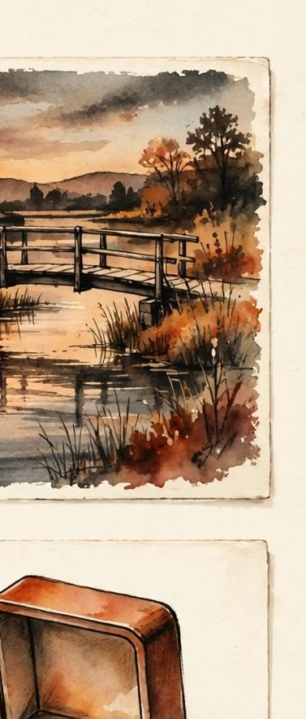
A bench stands beneath a tree, autumn leaves gathered at its feet.
The Story Desk keeps a small shelf in this hall that visitors are always surprised by, because the house's other halls have trained them to expect casting. These are the love stories without villains — the tellings in which an ending is arrived at, examined from every chair in the room, and attributed, at last, to no one's crime. Two people met. Two people, in the course of years, became people who could not continue. The story has weather in it, and timing, and the slow geology of two lives drifting on different currents. It has no dock. Nobody is in it.
Such stories are harder to tell than the indicted kind, and the desk does not pretend otherwise. A villain is a convenience; he gives the plot a handle and the teller a place to stand outside it. Without one, the teller must stay inside his own story, in his own proportion — one of two authors of a sadness neither of them ordered. The manuscripts on this shelf are therefore quieter, and usually shorter, and almost always written later in life than the indictments they replaced. Maturity, in the register's dry terminology, is largely the ability to shelve a story here.
The fairness owed to the real people in the tale turns out, on this shelf, to be owed equally to the teller, who is also a real person and was also there. A story without a villain is not a story without a truth; it is a story whose truth was weather, and weather is nobody's fault and everybody's biography. And the love in the tales on this shelf, unindicted, keeps its full size in the record, which is the whole point of the shelf. The Storykeeper closes the volume without a verdict. Some stories end the way evenings end: not because anyone failed, but because the light changed.
68The Chapter That Stays Unwritten
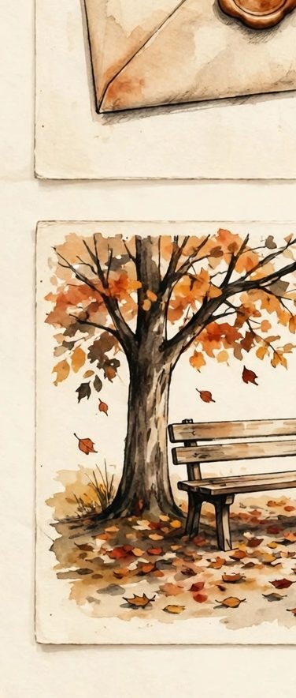
A page in the middle of the book lies blank, the story resuming after it.
Near the end of every love story in the house there is a chapter the teller has agreed, with himself, not to write. Sometimes it is the last meeting. Sometimes it is the thing said in the doorway, or the thing not said in the car, or the winter that followed and is described in the register only by its weather. The chapter exists — its page is numbered, its position in the binding exact — and it is blank, not because the teller has forgotten it, but because he has remembered it completely and made a decision the Story Desk has undertaken never to overrule.
The house defends the blank chapter against two kinds of vandal. The first is the well-meaning friend, arriving with the philosophy that everything must be told to be healed, tugging at the locked drawer. The second is the teller himself, in a confessional season, tempted to write the chapter for an audience and call the writing honesty. The desk is immovable in both cases. Some pages are kept blank the way some rooms are kept for guests who will now never come: not as denial, and not as shrines — as accurately labeled space. What happened there happened. The record says where, and is silent, and the silence is part of the record.
Other storytellers keep similar chapters in their own books, and the courtesy between households is to not ask after them at table. The Storykeeper has observed that the blank chapter, left in peace, tends over the years to trouble the binding less, not more — as though the story around it had grown strong enough to carry the gap. A chapter can stay unwritten forever and still be, in every sense that matters to the desk, finished. Every book in this hall is missing exactly what it is missing. The tale is told around it, whole.
69Telling It Until It Changes
There is a practice in this hall that the Story Desk permits without ever quite endorsing, because it cannot decide — having watched it for decades — whether it is a method or a symptom. A teller takes up the same chapter of the love story and tells it again. And again. At anniversaries and in kitchens, to the friend who has heard it forty times and makes the tea anyway. The words scarcely vary. The punctuation is load-bearing. To an outsider it looks like a wheel in a rut. The desk, which listens professionally, reports that it is something else: a man checking, telling by telling, whether the story still weighs what it weighed.
Because the remarkable fact, attested in the register over many households, is that the story does change under the telling — not in its facts, which are granite, but in its center of gravity. A detail that was the whole point in the first year becomes, by the fifth, a detail. A sentence that could not be finished can be finished. The laugh — the first time the teller laughs inside the story, at something genuinely funny that was in it all along — is recorded in the margin by the Storykeeper in the house's smallest and happiest hand. Nobody decides these changes. The telling is the weather that makes them.
Then one season the chapter is not taken up. Not forbidden, not burned — simply not needed, the way a crutch is not needed by a leg that has quietly resumed its duties. The friend makes the tea; other stories are told; the evening is, if anything, warmer. The desk counts this among the few reliable miracles in its keeping, and does not explain it, on the grounds that explained miracles stop applying for the position. The Storykeeper files the chapter without ceremony. A story told until it changes has finished its work, and is allowed to become a story like any other.
70What the Love Story Taught the Teller
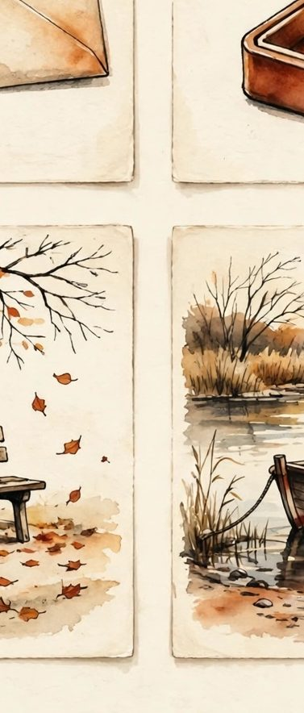
A bench under an old tree holds the shape of long sitting in good company.
Late in this hall, when the volumes have been handled enough, the Story Desk asks its residents the question it asks about no other genre, because the love stories are the only ones that reliably survive it: what did the story teach the teller? Not what the person taught him — that is a different ledger, and a fuller one. What did the telling teach: the years of drafting, the versions for strangers and for ceilings, the chapter that stays blank, the chapter told forty times? The answers, collected over many households, are never the ones the teller expected to give when the story was new.
He learns, commonly, that he is a more reliable narrator of weather than of motives — his own or anyone's. He learns which of his sentences were evidence and which were only music, and the discovery, though it arrives decades late for the case in question, is entered in the register as transferable. He learns the precise weight of the word almost, and the difference between a story that protects the person it is about and a story that merely protects the teller, and he is observed, in later manuscripts, quietly choosing the first. The curriculum is slow. The fees were considerable. The degree, the desk certifies, is real.
The Storykeeper enters these lessons without inflating them into a method, because the house has seen what happens to lessons inflated into methods — they are sold, and then they are souvenirs. What the love story teaches is kept the way its teacher would have wished: in use, not on display. He audits no other course afterward with quite the same attention. The story taught the teller how to tell the truth about two people, one of whom he will never fully know. It was, he says at last, the advanced course.
71The People in My Stories Are Real
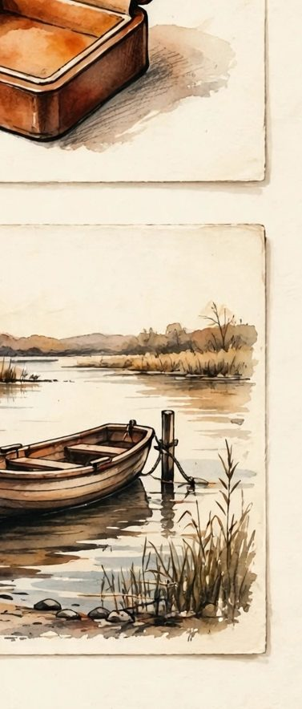
Two chairs stand by the fire, and both of them were truly occupied.
This room is the conscience of the hall, and its entry in the register is underlined — the only underline the Storykeeper permits himself in a season. The people in my stories are real. They are not characters, however convenient the word; they had, and have, their own manuscripts, in which the teller of this one appears in a supporting role whose performance they could describe with some precision. Every retelling in this hall is therefore a transaction conducted across a border: my version, traveling in their country, under their flag, to be read by readers who may one day include them.
The obligations this creates are not legal — the house keeps no lawyer among its storytellers — but they are binding in the way the desk understands binding. Fairness, first: the other author is to be given their reasons, not just their exits; their dialogue is not to be improved at their expense. Proportionality, second: a person's worst afternoon is not to be promoted, in the telling, to their whole biography — the teller has objected to exactly this promotion, in the villain hall, when the biography was his. And silence, third, where silence is owed: their blank chapters are theirs.
It will be noticed that these rules do not forbid the telling. Love stories are not theft, and grief is not slander, and the desk would resign before it ruled either. The rules only require the teller to remember, at the desk and at the fireside, that his cast is alive — that somewhere the other version exists, equally warm, equally certain, equally a draft. The teller who pays the charge tells, in the end, better stories, because real people make better material than effigies ever did. Retellings owe the real people fairness. It is the rent this hall charges for its fire.
72An Ending Is Also an Editing Choice
The hall's last entry corrects the deepest superstition the love stories suffer from, which is the belief that their endings were found rather than made. An ending, the Story Desk records in its driest hand, is also an editing choice. The events stopped where they stopped — that much is archive. But where the story stops, which scene it grants the final position, whether the last word is the door closing or the morning after the door — these were chosen, by a teller, on a particular evening of his life, in a particular state of his heart, and they could have been chosen otherwise.
The discovery is not a reproach; it is the return of the teller's authority over the one part of the past that was ever his to govern. He cannot re-choose the events. He can, at any age the house recognizes — which is all of them — re-choose the ending: move the final scene from the quarrel to the kindness that preceded it; end not on the departure but on the years, which were also true and considerably longer. Manuscripts from this shelf have been re-ended at fifty, at seventy, in the last lucid season of a long life, and the register has never once recorded a household objecting.
So the love stories are shelved at last as what they always were: not verdicts on two people, but drafts by one of them, honest drafts, which kept the other author's dignity in pencil in the margins. The Storykeeper closes the hall's door on its latch, the fire banked, the folder tied with both names showing. It will be opened again at the next telling, as it should be. The final position belongs, in the end, not to the ending but to the whole. An ending is an editing choice, and the truest ones are chosen in the direction of mercy.
73The Unfinished Tales
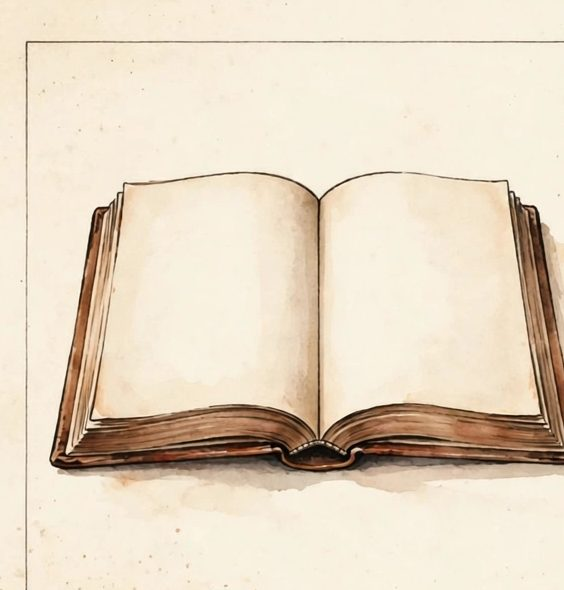
An open book lies on the desk, its final pages blank in the lamplight.
The next hall of the house smells of carpentry and unposted letters, and its shelves hold the manuscripts nobody else in the building knows quite how to regard: the unfinished tales. The career that stops in the second act. The move that was planned to the last bookshelf and never made. The great work, announced at thirty with complete confidence, whose folder has been moved from house to house ever since like an honored and increasingly silent guest. The Story Desk keeps this hall without a lock. Unfinished, in this house, is a condition of manuscripts, not a verdict on their authors.
The collection is larger than any teller first admits, because a life accrues unfinished tales the way a harbor accrues weather — constantly, and mostly without drama. Some were interrupted by the ordinary artillery of existence: money, illness, other people's emergencies, the arrival of better stories demanding the desk. Some were abandoned deliberately and are not unfinished at all, merely filed here by a teller who prefers the sound of postponed to the sound of no. And some — the desk is gentle about these — are still, in the full sense of the word, in progress, being lived at a pace their authors would be the last to defend and the first to explain.
The hall's doctrine, entered at the door in the Storykeeper's hand, is short enough to memorize and is tested at every shelf: an unfinished tale is a tale whose author is still alive. The register declines to be embarrassed about a single volume in the room. The lamps in this hall burn the same amber as everywhere else in the house; the desk permits no special gloom for the incomplete. Corpses finish everything, and are not envied for it. The rest of us keep a hall like this one, and are advised to visit it as citizens rather than as defendants.
74The Story That Stops Mid-Sentence
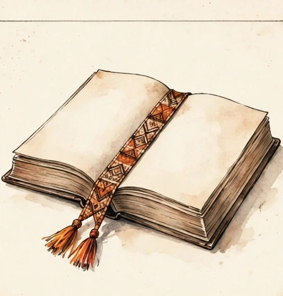
A bookmark rests mid-book, marking a pause rather than an ending.
Among the unfinished, one species deserves its own room, because every teller owns at least one and most own it in secret: the story that stops mid-sentence. Not at a chapter break, with the decency of a pause — mid-sentence, mid-gesture, the way a conversation stops when the door opens on bad news. The plan was being described, the letter was half drafted, the future was in the middle of its most confident clause, and then the sentence ends — not with a period but with the sound of a chair going over. What follows in the manuscript is not a conclusion. It is the rest of the author's life, written in other books.
Strangers to the manuscript demand to know how the sentence was supposed to end, and the teller, to his own surprise, often cannot tell them. It is not that he has forgotten. It is that the ending belonged to the person he was in the middle of that sentence, and that person's plans were discontinued with him. The grammar itself has changed since. To finish the sentence now, in the new grammar, would be forgery — fluent, plausible, and false to both authors. The Story Desk, which has seen tellers attempt exactly this forgery in seasons of tidiness, keeps the mangled page as it lies.
It turns out a sentence can be complete in the way a life can be complete: not by reaching its intended end, but by being honestly interrupted. The half-sentence in the manuscript testifies, with an accuracy no finished sentence could match, to the exact moment the world changed the subject. And the teller, reading it years later at the fireside, finds he no longer reaches for a pencil — which the desk records, in its small hand, as a kind of peace. The Storykeeper enters it in the register without emendation. Some sentences are finished by their stopping.
75"To Be Continued" Is Sometimes a Mercy
At the end of certain chapters in the house's manuscripts there appears a phrase that the tidy-minded hold in low regard, and the Story Desk holds in the highest: to be continued. It is what the old serials printed when the hero was, strictly speaking, at the bottom of the cliff. The desk has adopted it for the inner life, where the same conditions frequently obtain. To write to be continued under a tale one cannot finish is not evasion. It is the formal acknowledgment that the author is not dead, the material is not exhausted, and the story is therefore not required, tonight, to produce an ending it does not have.
The mercy in it is precise. A tale forcibly ended in a season of exhaustion acquires a false period, and false periods are the most durable lies in any register; they must be believed ever after or expensively retracted. To be continued, by contrast, costs the teller nothing but honesty and buys the manuscript its most valuable property: availability. The folder stays on the desk instead of going to the archive. The chair stays by the fire. Years later — the register contains cases the desk describes, with restraint, as providential — the teller picks the tale up at the exact line where he left it, older, and writes the part he could not have written then.
The house extends the phrase's protection to tellers as well as tales. To be continued is also, on certain evenings, the correct description of a person: mid-sentence, mid-recovery, mid-becoming, excused by the management from producing a summary. The Storykeeper stamps the page without apology and turns the lamp down. Serials were wiser than their critics; they understood that suspense is a form of hope with its coat still on. A story excused from ending tonight has not failed. It has been granted the only gift the desk has to give, which is time.
The Story Desk
One desk receives all correspondence for this fireside — questions, corrections, greetings, and word of any tale of yours that has lately changed its ending, or refuses to. It is read in the order it arrives.
76The Draft I Keep Meaning to Finish
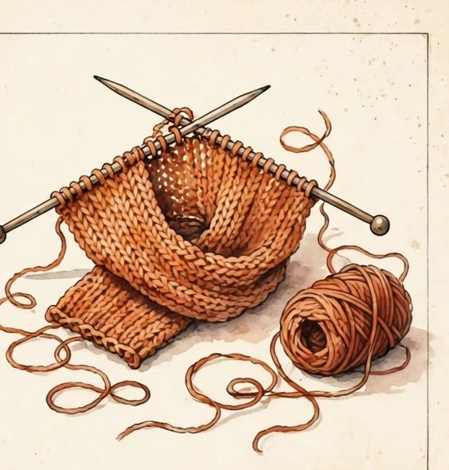
A half-built wooden boat frame stands waiting in a quiet workshop.
Every teller in the house keeps one draft in a category of its own, too warm for the archive and too cold for the desk: the one he keeps meaning to finish. Its intentions are excellent and fully documented. It is thought of in the bath, promoted at New Year, mentioned to friends with the particular brightness of a man describing a journey he has already bought the map for. The draft itself waits with the patience of furniture. Years pass in the warm climate of meaning to, which the Story Desk identifies, in its private terminology, as the most comfortable weather a manuscript can avoid dying in.
The desk, professionally curious, has investigated what the draft is waiting for, and reports that it is never waiting for time. Time is the excuse filed on the cover; the shortage underneath is always of something else — permission, or courage, or the willingness to discover whether the finished thing is as good as the unfinished one has been allowed to be. An unfinished draft cannot fail; that is its whole pension plan. It cannot be reviewed, remaindered, or surpassed by events. It stays forever at the exact size of its author's hopes, which is a size no completed work in the register has ever managed to keep.
The Storykeeper's counsel in this room is the house's usual compound of ruthlessness and tea. Either finish the draft — badly, quickly, in a season, accepting the demotion from perfect to real — or promote it, formally and in writing, to the archive of honored intentions, where it can stop taxing the desk. What may not continue is the tenancy. Most tellers, offered the two doors in plain language, choose one within the year. A draft kept warm by meaning to is charging rent in a currency of guilt, and the desk strikes it from the accounts.
77Endings I Refuse to Write
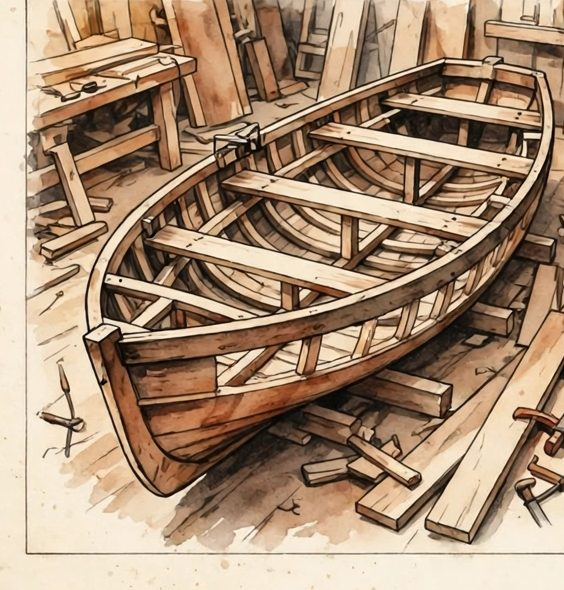
A pencil lies stopped mid-line on a blank page, the hand withdrawn.
There is a sterner room adjoining, and the Story Desk keeps its voice down in it out of a respect it does not explain to visitors. These are the endings the teller refuses to write. Not cannot — refuses, with the full authority of the author, in possession of all the facts. The reconciliation that will not be narrated into plausibility. The apology's triumph that did not occur and will not be staged. The version in which the letter arrives, the diagnosis reverses, the dead sit down to breakfast. He knows precisely how these endings go; he has, if he is honest, drafted them in the night version. He declines to shelve them as the story.
The refusal is sometimes mistaken, by the house's more sentimental departments, for despair, and the register corrects the error with some warmth. It is nearer to integrity. A teller who will invent an ending for consolation will invent one for prosecution too — the faculty is the same, and he knows it, and he has chosen to retire it in both directions. What happened, happened; the desk's phrase, repeated like a catechism. The record will end where the record ends, even if the ending is ragged, even if the audience of one leaves the theatre unsatisfied and has to make his own arrangements with the dark.
And yet the room is not hopeless, which the Storykeeper insists is the point of it. Refusing to write a false ending is how a teller keeps faith with a true one he cannot see yet — the way a chair kept empty is not a denial of the guest but a discipline of the house. The desk records the refusals in the same ink as the completions, and honors them equally. The manuscripts in this room are not unfinished. They are unwritten on purpose, which is a different and prouder category. Some endings are refused so that the truth can arrive unbribed.
78The Sequel I Am Afraid Of
Every long-running story in the house casts a shadow shaped exactly like its sequel, and the teller's relation to that shadow is the subject of this room. The sequel is the part he has not lived yet and is already narrating — the next job after the last one ended as it ended, the next love after the hall just visited, the next attempt at the thing the archive says he fails at. He is not afraid of the sequel's events, which have the decency to be unknown. He is afraid of its reviews, which he has, unassisted, already written, in the prosecutor's old hand, and posted in the lobby of the future.
The Story Desk points out, with the air of a man producing a document, that the feared sequel is the only manuscript in the building composed entirely of other manuscripts. Its plot is the villain version's, its weather the warning tales', its ending borrowed from the story of the one time. Nothing in it is new except the dates, which have been forged. A sequel assembled from the archive cannot surprise its author, and a sequel that cannot surprise cannot, in any honest accounting, be called a sequel. It is a rerun wearing next season's coat, and the house declines to premiere it as the future.
The remedy is not courage — the desk prescribes nothing so vague. It is authorship. The actual sequel, when it comes, will be written by the standard method: by living it in the present tense, one unreviewed scene at a time, with the critics excused. The teller is reminded that he has survived every premiere so far, including the ones the lobby notices condemned in advance. It is filed with the night versions, to be reviewed at the fireside and not before. The feared sequel is only a draft, and not, the Storykeeper notes, one of his better ones.
79Living in the Middle Chapters
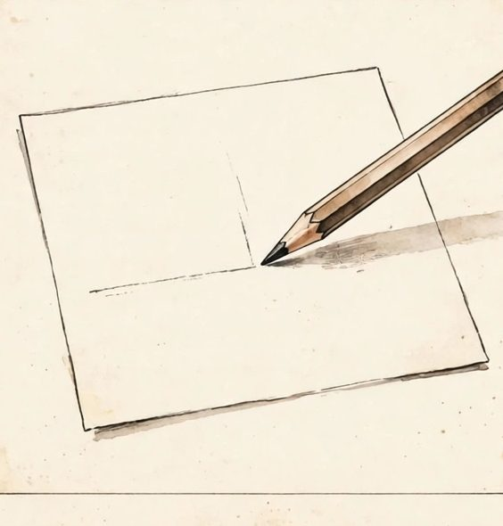
A road climbs steadily out of sight over a green hill.
The Story Desk wishes to correct a widespread misunderstanding of the building's floor plan: most of a life is not lived in its openings or its conclusions, but in its middle chapters — the long, unheadlined stretches where the plot is mostly weather and work, where nothing is being introduced and nothing, yet, is being resolved. The teller surveys these chapters in his manuscripts and is inclined to apologize for them, as one apologizes for a house's plain rooms. The desk forbids it. The middle chapters are not the corridor of the story. They are, by volume and by everything that matters, the story.
Middles have a texture the register describes as load-bearing ordinariness: the colleagues whose names fill a decade and then a margin; the house that was being improved for fifteen years and was, in the improving, the home; the self, getting on with being the self, in the long light between crises. Beginnings are photogenic and endings are quotable, but it is in the middles that a teller actually spends his life, and where anyone who loved him would look for him. The prosecution ignores the middles entirely, which the desk has long considered its most telling editorial decision.
The counsel of this room is therefore hospitable: furnish the middle chapters. Since the teller is going to live there — is, at this moment, living there — let the rooms have chairs, and fires, and the good cups out. A middle chapter properly furnished stops resembling a corridor to somewhere else. It resembles, instead, the place the whole journey was for. The Storykeeper, who has read more middles than beginnings and endings combined, rates them the best writing in the house. The middle is not what the story passes through. It is where the story lives.
80A Cliffhanger Is Not a Character Flaw
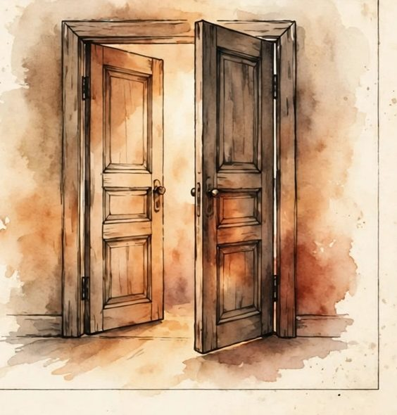
An hourglass stands with its sand half run, the light holding steady.
The hall ends with the register's most merciful filing decision, and the Storykeeper enters it as a standing rule of the house: a cliffhanger is not a character flaw. A life whose current chapter ends unresolved — the diagnosis pending, the letter unanswered, the work mid-river with the far bank in mist — is not a badly constructed life. It is a serial in good standing. The old storytellers, who invented the cliffhanger to bring the audience back tomorrow, understood what the tidy-minded forget: suspense is not the failure of a story. It is the proof that the story is still being issued.
Only in the inner court is a cliffhanger treated as evidence. There, the unresolved chapter is Exhibit A in the old prosecution: a settled person, the argument runs, would have endings. The desk dismisses the exhibit with something approaching relish. Settled people are a genre, not a population; the register has never admitted one. Every manuscript in the building, examined at any given midnight, ends mid-scene — the hero's, the villain's, the love stories', the warnings'. It is the uniform condition of the living, and the house refuses, on principle, to let a universal condition be billed to one tenant as a personal defect.
So the teller is excused, formally and for the record, from apologizing for the unfinished state of the current volume. He is mid-sentence; so is everyone he admires. The lamps of the hall are lit, the chair is by the fire, and the next installment is not his to produce tonight. The Storykeeper closes the hall with the lamps left on in one corridor, as is the house custom, for whoever is still reading. The audience, such as it is, can be trusted to return; it has nowhere else to go, being also the author. A cliffhanger is where a story catches its breath. It is not where it confesses.
81The Unfinished Tale of the Career
The career is the tale most people leave in the middle drawer, unfinished. It began with such a confident first chapter — the chosen trade, the early promise, the plan with dates in it — and then the plot wandered off the outline, as plots in lived books always do. There were chapters nobody predicted: the industry that changed its mind, the door that opened sideways, the years spent doing excellent work that fits no title. The narrator, embarrassed, keeps promising to make it cohere later. Later is still coming.
The house is unbothered by this. A career told honestly is a serial, not a monument; it was never going to conclude neatly at a podium. Half the volumes on the Story Desk's shelf are work-stories that simply stop where the job did, and the Storykeeper files them without apology, between the migrations and the reinventions. What looks like an abandoned draft from one chair is, from the fireside, merely a book whose author is still out living the research. The ending is not missing. It is pending, which is a different and more hopeful condition.
So the tale of the career stays open on the desk, and open is its correct state. A person is allowed to be between chapters of work the way a traveler is allowed to be between trains — seated, fed, in no disgrace whatsoever. The narrator may grumble about the untidiness, but grumbling is not an editorial policy. When the next chapter arrives, as chapters do, it will find the page kept warm. An unfinished tale of work is not a failed story; it is a story still in employment.
82The Unfinished Tale of the Move
Cardboard boxes stand half-packed by a doorway, a kettle still on the stove.
Every move produces two stories: the one about the place left and the one about the place not yet arrived, and for years neither is finished. The old street gets retold at a distance, growing kinder or stranger with each winter. The new address is narrated in the present tense by someone still learning where the light switches are. Between the two tellings sits the mover, fluent in neither, keeping the kettle unpacked because the kettle is the last citizen to surrender its papers. The boxes, meanwhile, keep their own counsel in the corner.
The Storykeeper has a shelf for relocation tales, and it is the widest in the house, because a move is never one story. It is the story of the job, and the story of the neighbor, and the story of the self who was supposed to flourish by spring. Some chapters close in a season; others take a decade to admit what they were about. The narrator works on all of them at once and finishes none, which is not incompetence. It is the accurate minutes-book of a life in transit.
The house rule is patience with this particular draft. A tale of moving ends when the teller stops explaining the new place by reference to the old one, and no calendar can schedule that morning. Until then the boxes in the story stay half-packed and the kettle stays out, and this is filed as honesty rather than failure. Some stories finish themselves later; the move finishes itself latest of all, and quietest. The neighbors, meanwhile, have long since stopped being described and started being known, which is how the tale quietly files its own progress. It ends not with an arrival but with an ordinary Tuesday.
83Some Stories Finish Themselves Later
A letter rests unsealed on the desk, waiting for a morning that has not come.
There are tales the narrator has started a dozen times and set down a dozen times, always at the same paragraph. The facts are all present; the ending refuses to assemble. The teller circles it like a chair he means to sit in, and rises each time with nothing decided. Then, some unremarkable season later — a face seen across a street, a piece of news at breakfast — the last piece drops into place by itself, and the story that resisted years of effort completes in an afternoon, as if it had only been waiting for its evidence to finish happening.
The Story Desk keeps a drawer labeled, in the Storykeeper's dry hand, not yet, and it is the fullest drawer in the furniture. Into it go the reconciliations that have not reconciled, the explanations still missing their final fact, the griefs whose meaning keeps moving house. Nothing in the drawer is broken. Visitors are shown the drawer sometimes, the way one shows a garden in winter, with complete confidence in what it is not yet showing. The house has learned that a story's timetable is not the teller's timetable, and that forcing a conclusion out of an unripe tale produces the literary equivalent of green fruit: technically an ending, impossible to digest.
So the unfinished ones are left in good company and good light, and the teller gets on with the tellable. This is not resignation; it is a technique older than the house. The loom stands threaded, the page stays open, and life — the only co-author whose contributions cannot be hurried — goes on dictating in its own order. Some stories finish themselves later. There is a discipline in the waiting, though it looks like idleness from the road: nothing is forced, nothing is buried, and the drawer is opened now and then just to let the air in. The wise teller simply keeps a chair free for the ending when it knocks.
84Leaving a Tale Open on Purpose
Most unfinished tales are unfinished by accident, but the grown teller learns to leave a few open by design. There is the story of the friendship whose final shape is still being negotiated by both parties, and the story of the ambition that may yet change its mind. To force these shut for the sake of a tidy shelf would be a falsehood in hardcover. There is also, if the house is honest, the question still being lived — the venture, the reconciliation, the slow repair — whose final shape its own author declines to guess at. The Storykeeper, who loves an ending as much as anyone, loves an honest opening more.
An open ending is not the absence of an ending; it is a decision about who gets to write it. Left open, a tale admits new evidence, new mercy, new facts arriving late in their traveling clothes. Closed too early, it can only repeat. The house notes that the stories people seal youngest are the ones they defend longest, as if the wax were load-bearing. The drafts left deliberately unsealed, by contrast, seem to breathe. They can be entered without appointment, read without permission, and left without the small ceremony of breaking a seal. They gather less dust and considerably less grievance.
So the tale stays open on purpose, and the purpose is hospitality. The fireside chair is not only for the stories that know how they end; it is for the ones still deciding, and they are received with the same tea and the same attention. A life with no open drafts would be a library, and a library is a fine thing to visit and a poor thing to be. The last word on the matter is the Storykeeper's: leave it open — the draft you refuse to seal is the one still able to surprise you.
85The Retelling
The same chair stands by the fire in softer, later light.
Every tale in the house has been told more than once, and no two tellings match. This used to worry the younger narrator, who believed a story that changed was a story betrayed. The Storykeeper set the matter straight early: a retelling is not a copy that failed. It is the same river crossed at a different season, by a teller who has since eaten, slept, forgiven, and read the weather differently. The facts hold their places like stones. The stones do not move merely because the light has changed, and the crossing is not falsified by being made in better weather. The water is under no obligation to repeat itself.
The house keeps the drafts layered rather than overwritten, the way a careful weaver keeps the earlier rows visible in the cloth. Here is the telling from the year it happened, all heat and prosecution. Here is the telling from five years on, shorter, with the jokes appearing at the edges like the first green in a hedge. Neither is the true one in the sense the courtroom means. Each is true to the teller who told it, and the stack of them together is the nearest thing to the whole account.
Retelling, then, is the house's central craft, and its dignity is this: it admits the teller into the story as a changing character. The plot may be fixed — what happened, happened — but the narration is alive, and life is permitted to edit. Around the fire the old tales come up again and again, each time slightly re-tailored, and nobody calls it inconsistency. The variations are not errors in the performance; they are the performance, continuing, the way a song continues by being sung and not by being stored. A story told twice is a story; a story told the same way twice is a recording.
86The Same Facts, a New Season
Snow melts along the same garden path the story crossed in summer.
Set the facts of any old tale in a row and they sit quietly, like cups on a shelf: the year, the place, the words said, the door closed. Nothing about them moves. Then the teller's season changes — grief thaws, success emboldens, age rearranges the furniture of importance — and the same cups hold different drink. They were catalogued, witnessed, and agreed upon by everyone present, including the teller, who signed the record in good faith. The story that was an indictment in winter is a comedy by harvest time, and not one fact has been altered to earn the promotion.
This unsettles people who want their stories certified once and stored. The Storykeeper pours more tea and explains the house view: a fact is a stone, but a story is the weather over the stones, and weather is famously not the stones' fault. The narrator who insists the telling must never change is asking the sky to hold still for administrative convenience. The house declines. It would rather have an honest climate than a tidy archive, and it files its seasons alongside its events, where they explain half of what the facts were once blamed for.
The practical mercy is large. If the same facts can bear a new season, then no bleak telling is a life sentence, and no golden one is a guarantee. The tale of the worst year can be re-crossed in fairer weather when the teller is ready, and ready is a season too. The facts will wait; they are patient as furniture. The house has watched it happen too many times for doubt: the unbearable year, revisited after rest and kindness, stands in the register with its facts intact and its sentence quietly commuted. What changes, when the teller rests and ripens, is the light they are finally seen in.
87What Changes When the Teller Rests
The narrator is tireless in the way of all machinery that runs on habit, and like machinery, it tells everything at the same speed and pressure. But let the teller rest — really rest, the unproductive kind, with the fire low and no audience scheduled — and the stories change their pitch on their own. Sentences shorten. Charges drop quietly out of paragraphs. It has been up since before dawn, most days, commenting on the traffic of the mind in a voice that mistakes volume for importance. Whole subplots that seemed structural turn out to have been fatigue wearing a costume.
The Storykeeper schedules nothing on rest days, which the younger staff once considered an indulgence and now consider load-bearing. A rested teller notices the witness the prosecution forgot to call; a rested teller can afford the merciful interpretation, because mercy costs energy and the rested have it to spend. Even the old warning tales soften their edges by an evening, not into lies, but into proportion. The margins widen; the footnotes of outrage, so dense in the tired drafts, thin out to almost nothing by supper. It is the cheapest editing suite in the world: sleep, food, and a chair that expects nothing.
So the house protects the teller's rest the way it protects its paper from damp. When the narrator has been working the night shift too long, every draft in the building skews darker and more certain, and certainty, here, is treated as a symptom of exhaustion. The cure is never a better argument. It is a closed desk and a lit fire and a moratorium on verdicts. No tale is admitted to the register in its night-shift wording if it can possibly be helped; the house has a rule about signing documents while exhausted. What changes when the teller rests is almost everything — because what changes is the teller.
88Retelling to a Kinder Audience
Two stools wait by the hearth where one stood before.
A story is partly made by its listeners, a fact every narrator learns the first time a familiar tale is told to a new room. The old audience — the inner one, trained years ago, quick with its verdicts — hears every draft as evidence. The kinder audience hears the same words as a traveler hears weather: with interest, without a summons. It has been listening since childhood, and it learned its manners in rooms where stories were weapons, apologies were defeats, and every ending had to name a culprit. Retell the tale there, and sentences that always ended in conviction end, astonished, in commas.
The house does not prescribe the kinder audience; it merely notes its acoustics. Some find it in one trusted friend, some in a page no one reads, some in the imagined company of the person they intend to become. What matters is the experiment: the same facts, spoken where they will not be used against the teller. Facts behave differently in safety. This is not sentimentality; the house keeps its standards, and a fact that cannot survive a kind room was usually a rumor in uniform. They stop performing for the defense and start, cautiously, to arrange themselves — and the missing ones, the exculpatory details, begin to come downstairs.
The Storykeeper keeps the second stool by the fire for exactly this reason: no tale in the house may be tried before a single, hostile listener forever. Every draft deserves one hearing in kind company before it is allowed to harden into the record. It is a small procedural reform with outsized effects. Retelling to a kinder audience does not acquit anyone by decree. The prosecution is not banned from the building; it is merely required, at last, to share the room. It simply gives the story its first fair hearing — and many a tale, heard fairly once, never prosecutes again.
89The Friend Who Hears the New Draft
A second cup steams beside the storyteller's chair, poured and waiting.
Somewhere in every retold life there is a friend who heard the new draft first — before it was fair, before it was finished, when it was still mostly trembling and apology. This friend did not edit. That is the whole qualification. While the inner audience demanded the story improve, this one simply stayed in the room while it changed, which turns out to be the rarer and more useful service. The draft at that stage is not a performance but a construction site, and most visitors hurry past construction sites on principle. Witnesses of drafts become, without any ceremony, citizens of the revised country.
The house honors this friend in its records more warmly than it honors most heroes. The hero version gets the laurel; the draft-hearer gets the second cup, poured without asking. The Storykeeper notes that new versions of old tales almost never debut in public. They premiere in kitchens and on walks, in the middle of sentences, to someone whose only contribution is the sentence every revision needs most: go on. There was no advice in it, no summary, no attempt to improve the ending before the teller had reached it — only attention, which is the rarest currency at any fireside. Two syllables, load-bearing as beams.
If such a friend exists, the tale is already halfway retold, whatever its state. If none exists yet, the house suggests the lack is a chapter, not a character flaw; kindness of audience can be recruited at any age, and often is, precisely by the telling. Either way the record stands: no story in this building was ever revised alone. The register is unambiguous on the point, and the Storykeeper underlines it for the new staff every winter. Behind every gentler draft sits a second cup, cooling kindly, and someone who heard the new version before it was safe.
90Details Return When It Is Safe
Ask the narrator for the whole of an old story and you will get the polished version, the one with the corners worn smooth by handling. But wait — let the years make the corridor safe, let the prosecution retire, let the teller rest — and details begin returning like cats to a quiet house. The weather that day. The joke somebody made in the car. The kindness in the middle of the disaster that the first draft had no room for. Memory, it turns out, was never empty. It was waiting out the noise.
The Story Desk logs these returns without surprise and without cross-examination. A detail that arrives late is not treated as a liar for its lateness; it is treated as a guest who needed the shouting to stop before entering. The house has learned that first drafts of hard years are missing most of their furniture because the teller was, at the time, using both hands to hold the roof up. The inventory completes itself later, at leisure, in armchairs. They are given tea, a place in the margin, and no questions about where they have been all these years. Chronology is a courtesy, not a law, in this archive.
So the retellings grow richer even as they grow shorter, which puzzled the bookkeeping until the Storykeeper explained: a story can hold more truth in fewer pages once the teller stops spending words on defense. The returning details are the dividend. They come when it is safe — and safety, in the economy of the fireside, is simply the teller's discovery that the past can be visited without being served. It is not safety the world applauds; it is safety the memory keeps its own ledger of, and pays out on its own schedule. The door opens; the small things come home first.
The Story Desk
One desk receives all correspondence for this fireside — questions, corrections, greetings, and word of any tale of yours that has lately changed its ending, or refuses to. It is read in the order it arrives.
91The Story Loosens Its Grip
A length of yarn slips loose from the loom, its pattern still visible, its hold released.
Old stories hold their tellers the way ivy holds a wall — gradually, thoroughly, and with every appearance of being the structure itself. Then, across the retellings, something subtle gives. The tale that once introduced itself in the first sentence of every day gets told later, shorter, with pauses where the outrage used to live. Nothing dramatic has occurred. The story has not been defeated or solved. Ask the teller and he will say nothing happened; he simply tells it less often now, and when he tells it, he makes tea first. It has simply been reclassified, from law to literature.
The Storykeeper watches for this loosening the way gardeners watch for the first real thaw, and marks it in the register with a small private star. It rarely announces itself. The teller notices only in retrospect: a month has passed without the old opening line; the anniversary went by like weather instead of like a summons. The grip loosens not because the tale was gripped back, but because the hand that held it — and was held by it — finally had other work, other firesides, and a life that kept scheduling over it.
There is no technique here to sell, and the house is careful to say so. Loosening is not a triumph of method; it is what happens to stories that are told honestly, in kind company, by a teller who rests. The vine does not release the wall because it was argued with. It releases because the seasons turned. So the old tale is thanked, shelved within reach, and allowed its retirement. A story loosens its grip in its own time — and finds, to its surprise, that it is remembered better loosely held.
92Humor Arrives Late, and Helps
A kettle boils over slightly, steaming, beside a chair nobody is angry in.
The first drafts of hard chapters are never funny, and the house does not ask them to be. Humor has its own timetable and it is always, without exception, late. It arrives years after the event, uninvited, at the fireside — a detail suddenly seen from the balcony, a line of dialogue that was tragedy in the living and is pure farce in the retelling. It does not arrive during the disaster, or in the solemn first retellings, when the narrator is still reading the charges aloud. The teller laughs before deciding to, and the laugh is a kind of evidence: something has changed that no argument could have changed.
The Storykeeper treats this laughter as the archive's most reliable instrument. Not because everything is funny — the house keeps its tragedies in a plain binding and does not joke about the binding — but because a story that can hold one honest laugh has stopped being a verdict and become a country, with weather in it. The prosecutor hates humor; it dissolves his exhibits. The hero version tolerates it badly too. Only the mature draft, the one told by a person rather than a position, has room in its margins for the absurd.
So when the laugh arrives, late and slightly indecent, it is given a chair like any other guest. It does not erase the chapter; it seasons it, and a seasoned tale keeps far longer than a pickled one. The house's long view is that most stories, given enough retellings, will either curdle into prosecution or mellow into something that can be told at a table without the table going quiet. Humor is how the mellowing announces itself. It arrives late, and it helps — that is all, and it is not little.
93Retelling Without a Verdict
The advanced exercise, the Storykeeper says, is to retell an old tale and decline to conclude it. No gavel at the end, no sentence passed on any of the cast, including the teller. The facts are laid out like cards; the music is kept low; and then — the hardest paragraph in the language — the story is simply set down, the way one sets down a cup, without declaring what it proved. Most narrators fail this exercise for years. The verdict is the narrator's favorite chair; it creaks with use.
What is gained by leaving it empty is scope. A story with a verdict can be used for exactly one thing: evidence. A story without one becomes available for everything else — instruction, company, comedy, warning, warmth. The house keeps both kinds, labeled honestly, but it is the verdict-free drafts that get taken down most often in the evenings, because they can be read by a tired person without being conscripted. They can be told at breakfast, on trains, to grandchildren, and each telling leaves the teller stronger instead of more certain. The prosecution's copies, meanwhile, gather the special dust of documents everyone respects and nobody opens.
Retelling without a verdict is not the same as believing nothing. The teller may hold opinions the way a host holds coats — attentively, and without wearing them all at once. It is a discipline of the last paragraph: to let the tale stand in its facts and its weather, and to trust the listener, even when the listener is oneself, to walk around in it unsupervised. Every story told without a verdict is a small declaration of independence — the facts, freed from their sentence, are finally allowed to be a life.
94Editing Is Allowed at Any Age
A new pencil lies across a book printed long ago, its pages foxed at the edges.
There is a superstition abroad that a life's stories set like plaster — that the telling fixed at thirty is load-bearing at seventy, and to edit it is to crack the wall. The house has examined the claim across several thousand evenings and finds it false. The drafts on these shelves bear revision marks in every decade's handwriting, including hands that shook a little. The architects consulted in the metaphor are unanimous in dismissing it. The oldest editor on record here revised a founding tale in her nineties, with a pencil stub and complete lack of ceremony.
What age actually changes is not permission but economy. The young editor revises for accuracy, the middle-aged for fairness, the old — the Storykeeper reports this with respect — for lightness. They cross out the prosecution's adjectives first. They restore the witnesses the earlier drafts left standing outside the door. Whole charges are quietly withdrawn, not because the facts softened but because the editor finally had better uses for the remaining pages. It is the most dignified editing style the house knows, and it is available at any age, because it was never age that granted the license.
So the standing rule is carved where the new staff can see it: editing is allowed at any age. No draft of a life requires a permit to revise; no story is too old to be retold more truly, more kindly, or more briefly. The pencil does not care what year the book was printed. It cares only that the hand is willing. And the house adds, for the benefit of the hesitant: the latest revisions are often the best ones, because they are made by the only editor who has read the whole manuscript.
95The Tale Gets Shorter and Truer
A thick manuscript lies beside a slim one on the shelf, both telling the same life.
Compare the tellings across the years and a pattern emerges that no one predicted: the story shrinks as it improves. The first version of the great disaster ran to chapters, with exhibits. The current version takes four sentences and a shrug that contains, somehow, all of it. Nothing essential has been lost. The disaster has not changed; the archive has its papers and they agree with the fat version on every particular. What has been shed is the scaffolding — the justifications, the prosecution's footnotes, the hero's lighting — everything the tale needed while the teller still required it to do work.
The Storykeeper keeps both manuscripts, the fat one and the slim, side by side, as the house's favorite teaching exhibit. Brevity here is not forgetting; the slim draft remembers everything, it has simply stopped arguing. Its sentences are short because they no longer carry lawyers. And truth, the archive notes, has a distinctive sound at this stage: it is the sound of a person who can say it happened, say what it cost, say what it taught — and stop, the way a bell stops, because the note is complete.
There is a freedom waiting at this end of the shelf that the long drafts cannot imagine. A short, true tale takes almost no strength to carry; it can be set down anywhere, picked up by anyone at the fireside, even enjoyed. The narrator who once needed an evening to tell it now needs a paragraph, and the recovered evenings are not empty — they are where the new stories are being lived. The tale gets shorter and truer. It can even be told standing up, in a doorway, to someone who asked a simple question. So, on the evidence of this house, does the teller.
96The Fireside Gets Quieter
Late in the retelling years, a change comes over the fireside itself. The stories do not stop — the house would worry if they stopped — but they lower their voices. The great prosecutions are no longer performed nightly. The hero has stopped requesting his overture. What remains is a smaller company of tales told slowly, to fewer listeners, with longer silences between the sentences that nobody hurries to fill. Guests notice it before the staff do, and usually mistake it for the evening winding down, when it is in fact the evening arriving. The kettle takes longer to boil and nobody minds.
The Storykeeper, who has presided over every volume this room has produced, considers the quiet a harvest rather than a loss. Noise was the tax the young drafts paid for being believed; the old ones are believed without paying it. Even the warning tales moderate themselves, arriving as counsel instead of alarm. The warning tales, the hero's tours, the old prosecutions: all still catalogued, all still honored, none of them shouting. The room has the settled acoustics of a library where every book has finally been read by its author — understood, forgiven in the margins, and shelved within reach rather than brandished.
So the fireside gets quieter, and the quiet is not an ending but a tuning. In it, the remaining stories can be heard properly for the first time — their actual notes, unamplified. There is less furniture being moved, fewer doors being shut for emphasis, and a great deal more listening done in the ordinary way, with both hands free. The chair by the fire stands ready as it always has, for the next tale and the next teller, and the house asks only that the quiet be recognized for what it is: not the stories running out, but the storyteller, at last, running true.
97Step One: Catch One Story Mid-Sentence
A small hand bell waits on the desk beside an open draft, ready to ring once.
The first step is small enough to fit inside an ordinary hour. The narrator is always broadcasting; the step is simply to notice one broadcast while it is still in the air. Somewhere between the kettle and the door, the old sentence begins — the one about how things always go, or what people like this always do, or the verdict that arrives dressed as a weather report. The step is to catch it there, mid-sentence, the way one catches a cup beginning to slide: without drama, and in time.
No argument is required at this stage, and the house advises against one. A story argued with in mid-sentence digs in and calls witnesses. A story noticed, by contrast, tends to pause — caught broadcasts have a way of trailing off when their audience of one sits up and pays attention. The Story Desk's whole first-step equipment is accordingly modest: a pause, a lifted head, the private acknowledgment that a telling is in progress and that tellings are made things, not weather. Made things can be remade. That acknowledgment is the entire step.
Practice it once and the narrator's seamlessness is never quite seamless again, which is the point. The broadcast continues, of course; step one promises no silence. But now there is a small bell on the desk of the mind, and it has rung once, and it can ring again. Every revision in this house began as somebody noticing, mid-sentence, that they were being told a story by a voice they knew well. Catch one story mid-sentence — the rest of the stairs are built from that single act of attention.
98Step Two: Ask Who Is Telling It
A row of hats from different decades hangs by the fireside, each waiting its turn.
Caught mid-sentence, the story raises a question that step two exists to ask: who, at this moment, is doing the telling? The narrator is a company, not a person, and its shifts are worked by many hands. Sometimes the voice is the frightened one's, up early and catastrophizing before breakfast. Sometimes it is the prosecutor, rested and briefed. Sometimes — quieter, easily missed — it is the teller proper, the one who keeps the chair by the fire. The sentence sounds different depending on which of them holds the floor.
The step asks for identification, not insurrection. The house does not recommend arguing with the shift-worker of the hour; it recommends knowing which one is on. A warning tale told by the frightened voice is weather; the same tale told by the rested teller is counsel, and a life runs more smoothly when its owner can tell weather from counsel at a glance. The register by the Story Desk keeps a column for this — teller — and the entries, over time, become the most quietly educational reading in the building.
Ask who is telling it, then, whenever a story arrives with unusual force — force being the usual sign that a specialist has seized the microphone. The question costs three seconds and changes the jurisdiction entirely. A story known to be the night shift's production can be heard with compassion and filed under drafts. A story from the rested teller can be trusted with the day. It also works in reverse, which the staff find encouraging: a gentle story is evidence about who is holding the floor, too. The narrator works either way; step two simply insists that the management read the roster.
99Step Three: Separate the Facts From the Music
Every story arrives as a duet: the facts, singing low, and the music, which is everything else — the tone, the pacing, the swell at the dramatic places, the minor key laid under an ordinary Tuesday. Step three is the careful work of separating the two, not to discard the music but to hear it as music. The facts are few and plain: what happened, when, who was there, what was actually said. The music is vast, and most of it was composed years before the event it now accompanies.
The Story Desk keeps a sieve for this step, an old kitchen implement promoted to philosophy. Through it, the tale is poured slowly. What remains in the bowl are the stones: dates, words, actions — the verifiable bones. What the sieve catches is the interpretive flour: the motives assigned without evidence, the always and the never, the conclusions that travel in the music's luggage. Both piles are kept. The house throws nothing away. But they are labeled separately at last, and a tale correctly labeled loses most of its power to masquerade.
The mercy of the step is that it requires no verdict on either pile. The facts are not declared cold, nor the music false; some of the finest music in the house is true in every way except the literal. But a teller who can say this much is fact and this much is the score has already moved the story from the courthouse to the fireside, where it belongs. Separate the facts from the music — and hear, perhaps for the first time, how much of the old tale's authority was only ever volume.
100Step Four: Name the Genre Honestly
Blank labels and a pen lie beside a row of storybooks waiting to be shelved.
Shelved correctly, half of a story's power is explained. Step four asks the teller to perform the librarian's honesty: what genre is this tale, actually? It may present itself as a documentary while behaving, on inspection, like a tragedy with a contract. It may wear the costume of a warning and be, underneath, a revenge play in a false beard. The title page always claims more dignity than the contents can support. The narrator rarely labels its own productions truthfully, because genres, admitted, lose altitude — a lament that knows it is a lament cannot also pose as the news.
The house keeps the taxonomy simple and refuses to be shamed by it. Every fireside has its genres: the prosecution, the lament, the hero's tour, the warning, the love story with its subplots, the farce nobody admits to enjoying. None of these is a disgrace; libraries are built of them. Whole civilizations of the inner life have been organized on this shelf system, and the Story Desk sees no reason to apologize for it. The disgrace, if the house allowed the word, would be miscataloguing — filing the lament under current events, where it governs the day, instead of under poetry, where it can be visited with respect and closed at bedtime.
Name the genre honestly, then, in the privacy of the desk, and watch the tale adjust its demands. A tragedy acknowledged asks for witness; a tragedy miscatalogued as fact asks for obedience, and obedience is a great deal to give a genre. The Storykeeper's register gains a column and the shelf gains order, and the teller gains the peculiar freedom of the reader who knows what kind of book is in their hands. To name the genre is not to dismiss the story. It is to finally read it as it was written.
101Step Five: Thank the Teller for the Shift
A cup of tea stands poured at the narrator's empty chair, steam rising in thanks.
Step five surprises the new staff every time: before any story is revised, the teller is thanked. Not ironically — the house does not keep irony in this drawer — but plainly, for services rendered. The narrator worked the whole shift of a life: through the night watches and the disasters, narrating fevers and first days with the same exhausted equipment. Even its worst productions were attempts, however clumsy, to keep the record and warn the house. It catalogued the dangers it could see and invented a few it could not, out of an excess of duty. Ingratitude toward one's own narrator, the Storykeeper insists, is poor management and worse manners.
The thanks are specific, which is what makes them work. The warning voice is thanked for the years it stood at the gate; the prosecutor, for its vigilance, however overbroad; even the hero's publicist is thanked for keeping morale alive in the lean decades. Something in the company settles when the shifts are acknowledged. Staff who feel their service is on the record stop shouting for attention in the corridors, and a narrator that no longer needs to seize the microphone can be — this is the quiet miracle of the step — negotiated with. The register records the thanks in the same hand as the facts, because the house considers them facts.
Thank the teller for the shift, then, before reaching for the pencil. Editing done in gratitude has a different hand: slower, fairer, unwilling to improve the story by falsifying the past. The drafts that follow this step in the register are consistently the kindest in the archive, and not coincidentally the truest. The house learned long ago that you cannot revise a voice you are at war with; you can only be shouted over by it, in a corridor that grows narrower every year. Gratitude is not surrender. It is how the management finally gets a hearing.
102Step Six: Add One Missing Fact
Step six is surgical: one fact, no more. Every hardened story in the house is missing at least one — the witness never called, the kindness edited out for pacing, the circumstance that the prosecution's version could not afford. The step is to find a single one of these and enter it into the record, plainly, in the margin, without fanfare or immediate conclusions. One fact is chosen because one fact is deniable by nobody, not even the narrator, who can resist revolutions but struggles to argue with a date, a name, a weather report from the day in question.
The Story Desk's register shows what such marginalia accomplish over time. A charge of always collapses, gracefully, the day a single never is added beside it. The hero's clean arc acquires the lost afternoon that makes him human. The love story recovers the ordinary decency that grief had cut for length. The entry takes one line, in a plain hand, and asks nothing of the reader but that it be included. No tale in the archive was ever overturned by a missing fact; they were, instead, rebalanced — the way one stone, placed correctly, settles a wall that a decade of argument left leaning toward the road.
Add one missing fact, then, and leave the step there, resisting the editor's itch to add ten. The tale will do the rest of the work itself, in its own time, the way a plant does when a single stone is lifted off it. The house's long records suggest that most stories do not need to be contradicted; they need to be completed, and completion is quiet, clerical work. And completion begins, always, with the one fact the teller is finally willing to let into the room — small, plain, and entirely sufficient.
103Step Seven: Retell One Scene From the Balcony
A small balcony overlooks the fireside stage, one chair drawn up to its rail.
In the theater of the old tales, the narrator almost always sits in the front row, where the actors' sweat is visible and every line lands at full force. Step seven moves the seat. One scene — only one, the step is modest — is retold from the balcony: far enough back that the whole stage is visible at once, the entrances and the exits, the other characters' faces during the famous speeches. From up there, astonishingly, the scene has more than one person in it, and the lighting is doing half the talking.
The house maintains the balcony for precisely this discovery. From the front row, the old scene was a duel; from the balcony it is an ensemble, and the teller's great antagonist is seen, perhaps for the first time, to be tired, and frightened, and playing a part he also did not write. Even the teller's own character reads differently at distance — less monstrous, less magnificent, more recognizably a person doing their best with the lines the season provided. Nothing is excused from the balcony. Everything is merely, mercifully, in proportion.
Retell one scene from the balcony, then, and notice which charges cannot survive the altitude. The step does not ask for forgiveness, or verdicts reversed, or any of the large ceremonial outcomes. It asks for a seat change, and the humility of a better view. The Storykeeper's records show that most prosecutors resign quietly once their best scenes have been seen from above, the way most storms look smaller from the hill. And the tale, retold from a height, returns to the fireside with its drama intact and its tyranny diminished — which is exactly the condition in which stories best serve.
104Step Eight: Let One Tale Stay Unfinished
A bookmark rests a third of the way through a book left deliberately on the chair's arm.
Step eight runs against the tidy instinct, and is therefore assigned late: choose one tale — the house suggests a middle-weight one, not the founding tragedy — and formally let it stay unfinished. Not abandoned; released from the duty of concluding. The narrator, who experiences every open draft as a clerical error, will file protests, probably in triplicate. The step stands. Some stories are not puzzles awaiting their final piece but rooms the teller is still living in, and a person cannot be asked to write the ending of the room he is standing in.
The permission changes the tale's weather immediately, which is how the house knows the step is medicine and not neglect. A story no longer required to resolve stops demanding that the present resolve it; the teller's current chapter is no longer graded by a draft from decades ago. In the register, such tales are marked with the Storykeeper's smallest and warmest notation: open, on purpose. They gather no penalties. No caretaker is appointed, and no deadline is set trembling in the margin. They are revisited when visited, like a cottage one owns outright but does not have to heat all winter.
Let one tale stay unfinished, then, and let the others learn from its calm. The unfinished one becomes the house's standing proof that an ending is a courtesy, not a debt — that a life can be well-kept with a draft or two open on the desk, the way a good letter can end mid-thought between friends. The fireside loses nothing by it, and gains a certain ease in the chairs. Indeed the Storykeeper observes that the open tale is often the truest one in the room: it is the only story in the building shaped exactly like a life.
105Step Nine: Tell One Story in the Present Tense
The narrator's native tense is the past perfect: everything important, in its telling, has already been decided. Step nine conducts a small experiment against this grammar. One story — a modest one to start — is told entirely in the present tense. The teller is not was but is; the room is not then but here. The effect is out of all proportion to the exercise, and faintly comic the first time it is attempted. A verdict requires the past tense to sit in. In the present tense, the old tale has to get up and move around.
The Story Desk uses this step the way musicians use a metronome: to expose habits. Told in the present, the prosecution's case turns visibly theatrical — nobody, in the actual present, is standing where the indictment needs them to stand. The warning tale becomes a description of today's weather, which is frequently fine. Even the griefs change their posture; grief in the present tense is permitted to include the kettle, the light at the window, the friend due at four. The present is wider than the past. It has room in it for the teller to be alive in the same sentence as the sorrow.
Tell one story in the present tense, then, and let the experiment file its own report. No doctrine is attached; the house simply notes that a tale which survives translation into now has been found, on testing, to be a memory rather than a haunting. The others — the ones that can only breathe in the past perfect — are not condemned for it. They are shelved, accurately, among the histories, where they keep perfectly well. The present tense is the fireside's own tense: the fire is lit now, the chair is free now, and the teller, at last, is in the room with the story.
The Story Desk
One desk receives all correspondence for this fireside — questions, corrections, greetings, and word of any tale of yours that has lately changed its ending, or refuses to. It is read in the order it arrives.
106Step Ten: Retire One Prosecutor With Thanks
A ribbon and seal of office lie laid down on the desk beside a pensioned candle.
By step ten the house has thanked the teller, heard the roster, and seen the best scenes from the balcony, and so the prosecutor — that tireless officer of the villain version — can finally be approached about retirement. Not dismissed in disgrace: retired, with thanks, in the small ceremony the Story Desk reserves for long service. The indictment he carried for decades is received, stamped, and filed where old indictments go. His chair is not smashed. It is simply, from this date, no longer his, and the cushion keeps his shape for a while out of respect.
The retirement is specific, as all the house's mercies are. One prosecutor, one case, closed with gratitude for the vigilance and regret for the overreach; the office itself is not abolished, since a life still needs someone to notice real wrongs, including its own. But the standing prosecution — the one that opened every morning with the same defendant — is stood down. The Storykeeper signs the paper with the register's best pen, on the grounds that endings of service should be as well-written as beginnings. Even the prosecutor, reading it, is seen to sit down, and to stay seated.
Retire one prosecutor with thanks, then, and attend to the quiet that follows, which is the step's true content. It is not triumph; triumphalism is just the prosecution in a new uniform. It is the quieter discovery that a day can begin without a case being called, and that breakfast tastes different in a house without a docket. The defendant — who is also the teller, and the host, and the keeper of the fire — may spend that reclaimed morning on other business entirely. The court is adjourned. The room, to everyone's surprise including the retired officer's, becomes a fireside again.
107Step Eleven: Read the Old Tales as a Guest
A guest's coat hangs by the door; the old book lies open, offered, not assigned.
The eleventh step changes the teller's visa status in his own archive. Hitherto the old tales were read as obligations — subpoenas from previous decades, each demanding to be believed in exactly its original wording. Step eleven grants the reader a guest's rights. A guest in a house of stories may admire the binding, question the plot over tea, and sleep under the roof without signing the register of agreement. The guest is under no obligation to weep at the appointed pages. The tales, to the narrator's astonishment, survive being read this way. Several, on inspection, improve.
The Storykeeper models the role at the evening readings: hospitable, unhurried, free to laugh in the wrong places and to close the book before the famous chapter. A guest's reading discovers what an owner's cannot — which passages are furniture and which are load-bearing, which horrors have quietly become antiques, which beauties were overlooked for fifty years because the reader was always too implicated to see them. Distance, the house has always maintained, is not the opposite of love. It is love's reading lamp, and it burns steadier than the owner's torch.
Read the old tales as a guest, then, whenever the archive starts issuing orders. The guest owes the house courtesy, attention, and honest response — a real debt, gladly paid. The guest does not owe obedience, residence, or a renewal of the old vows at checkout. This distinction, posted by the Story Desk in its clearest hand, has freed more shelves than any bonfire the reformers ever proposed. The tales remain, honored and entire, on their hooks by the door. The reader walks out into the evening his own person, carrying only what he chose to carry.
108Step Twelve: Keep the Chair by the Fire
The last step is not an action upon any story. It is the maintenance of the place where stories are told — the chair by the fire, kept. Kept swept, kept in repair, kept with its cushion beaten and its position honored, through seasons when no tale is being revised and no prosecutor is on the roster. The house's whole doctrine is finally this piece of furniture: that there exists, in every well-run inner life, a seat from which the narration is done kindly, at leisure, by the rested teller, in good light and in one's own time.
Keeping the chair is the practice that makes all the other steps possible, and the only one that must be done daily. Drafts can wait; the fireside cannot, because a neglected hearth fills the house with exactly the cold in which prosecutions breed. The Storykeeper's own day is mostly this keeping: wood carried in before it is needed, ash cleared without commentary, the chair turned slightly toward the door in case a new story — or an old one, returning as a guest — should come in out of the weather, wanting a hearing.
Keep the chair by the fire, then, as the sum of the twelve steps and the whole art of this hall. A person who maintains the seat maintains the jurisdiction: here, stories are drafts; here, tellers are thanked; here, the past is read by firelight and not by floodlight. The chair will outlast every tale told in it, which is as it should be. The stories change, the tellers rotate, the fire is fed — and the chair by the fire stands ready, which is the nearest thing this house knows to a happy ending.
109The Long View, Told Slowly
The fireside stretches into a long room of shelves, the light traveling far and softly.
From the long end of the room, a life of stories looks different than it does from inside any single one of them. The prosecutions that once filled the sky are visible, at this distance, as weather systems that passed over particular years. The hero's tours shrink to their true scale: a few bright valleys in a large, mostly ordinary country. The Storykeeper, taking visitors down the long gallery, speaks more slowly here by policy, and points out the landmarks without raising his voice. Speed was the young narrator's instrument. The long view prefers a walking pace.
What the distance reveals, above all, is proportion — the quality every individual tale lacks and the collection quietly possesses. The worst chapter occupies, measured against the shelves, a few inches of binding. The kindnesses occupy more, which surprises every visitor who arrived believing the opposite. Whole decades that the narrator filed under nothing happened turn out, from the long view, to have been the foundation courses of everything after. The house does not argue with any single story's account of itself. It simply keeps the gallery long enough that no single story can mistake itself for the building.
So the long view is told slowly, as the title promises, and slowness is its mercy. A life reviewed at walking pace can be accompanied; a life reviewed at a gallop can only be judged. The Storykeeper's final instruction to departing guests is always the same, and it is less a rule than a tempo, offered at the door like a coat. Tell it slowly. The facts will keep. The fire will keep. And the story, told slowly enough, becomes at last what it always wanted to be — not a verdict on the journey, but the journey, remembered by a friend.
110A Life, in All Its Drafts
Notebooks of many ages stand in a row, their spines worn at different heights.
The archive's proudest shelf holds no masterpiece. It holds the drafts — all of them, kept in order, from the schoolboy's first prosecution of himself to the current edition, still warm from revision. Visitors expecting a single bound Life are shown the row of notebooks instead and are sometimes disappointed, until the Storykeeper explains the house's position: the drafts are the life, editorially speaking. The fair copy everyone waits for is a rumor that has never once kept an appointment. What exists, what has ever existed, is the working stack.
Read down the row and the teller's whole education is visible in the revisions. The early drafts are absolute, inked in verdicts, innocent of margins. The middle ones swell with evidence, counter-evidence, and the first jokes, which arrive like swallows, one at a time. The recent ones grow shorter, kinder, and more widely spaced on the page, as if the author had finally learned that white space is also a kind of sentence. No draft in the row is disowned. The house is firm on this: an author who burns his juvenilia merely loses the evidence of how far the fire has traveled.
A life, in all its drafts, is thus the opposite of a scandal; it is a bibliography. The person who can shelve his versions in order — who can take down the prosecutor's edition and the publicist's and read them as editions, with publication dates — has achieved the only mastery this hall certifies. The drafts stay. The draft-keeper grows. And the newest notebook, blank at the back in the usual way, waits without anxiety on the desk: whatever is written next will also, in time, be revised by a kinder hand.
111The Stories Others Will Tell of Me
One evening in the long gallery, every teller meets the shelf that faces the other way: the stories that will be told about him, by others, in rooms he will not enter. The children will tell theirs; the colleagues, the old friends, the brief acquaintances with their one perfect anecdote. None of these editions will be authorized. The narrator, who has controlled the manuscript for a lifetime, discovers at this shelf that he has always been a character in other people's drafts — and will remain one, beyond the reach of revision.
The house receives this discovery without panic, which surprises the staff every time. A story told by others is not a theft of the record; it is the record's natural continuation in other hands, subject to their seasons, their sieves, their balconies. The Storykeeper notes that every guest at this fireside has told the old tales wrong in the kind, human ways — compressing decades, promoting minor characters, misremembering the weather toward meaning. It is what tellers do. It is, in fact, exactly what the house has been describing all along, from the other side of the fire.
So the long view includes a relinquishment, performed calmly and in advance: the stories others will tell are theirs. What remains in the teller's jurisdiction is only the life those stories will be made from — the facts laid down, season by season, in other people's memories, which are other people's desks and not his concern to police. Live so that the raw material is kind, and the drafts will look after themselves. It is the last editorial truth in the building: you cannot revise your posthumous editions, but you are, today, still supplying their facts.
112The Teller Grows Gentler
A much-read copy of the book lies open, its pages softened by many readings.
Nobody sets out to become a gentler teller; the house has checked, and there is no such resolution in any January register. The gentleness arrives as a by-product — of rest, of kinder audiences, of prosecutors retired and facts restored and one too many scenes watched from the balcony to keep hating them at full strength. One season the narrator opens a famous indictment and finds, to its own surprise, that it cannot work up the old weather. The adjectives have gone mild. The sentence trails off into something almost like sympathy, and stops there, resting.
The Storykeeper files this under ripening and refuses to file it under surrender, a distinction the house guards carefully. A gentler teller is not a teller who has stopped noticing wrongs; the register remains complete, and some entries in it are grim in any edition. What has changed is the telling's aim. The young narrator told stories to win; the older tells them to accompany — the facts, the other characters, the younger self still standing in the middle of the scene with his outdated map. Winning required verdicts. Accompanying requires only presence and a good chair.
So the teller grows gentler, and the tales, surprisingly, grow stronger — gentleness being a far more durable binding than rage. The prosecutions cracked their spines within a decade; the kind editions are the ones still in circulation at the fireside, still being handed across with the ribbon in them. The house's oldest truth may be this, and it is posted where the young staff cannot miss it. No story was ever improved by the teller's cruelty, not even the true ones. Especially not the true ones, which deserve a voice steady enough to carry them.
113A Story Is a Raft, Not the River
A small wooden raft rests at a quiet shore, the wide river moving beyond it.
The house keeps one image framed above the Story Desk, and by the last halls every guest has seen it: a raft at a shore, and the river going on without it. A story, the Storykeeper explains, is a raft — a made thing, lashed together from whatever timber the season provided, built to carry a person across a stretch of water that could not be walked. It is judged by one standard only: whether it floated, and whether it brought its passenger over. It is not judged as a river. It was never the river.
The confusion of the two is the source of most of the archive's sorrow. A teller who mistakes his story for the river itself must defend every plank as geography; a fact that loosens one lashing threatens the whole landscape, so the landscape is defended with prosecutions. But the river — the life as it actually ran, wide, unrepeatable, mostly unwitnessed — was never in danger from any revision. It ran before the raft was built and runs beyond the landing, indifferent and generous. Stories are how we cross it. They are not what it is.
A story is a raft, not the river: the doctrine in nine words, small enough to carry out of the hall. It means a draft may be rebuilt mid-crossing without heresy. It means a tale that no longer floats may be honorably dismantled at the shore, its timber thanked, its service recorded in the register. And it means the teller may step off the raft at any landing and feel the ground — the actual life, unstoried and immediate — under his feet. The river does not mind being crossed. It minds nothing. It has somewhere to be, and so, the house gently notes, have you.
114Older, and Editing Less
Visitors to the long gallery often expect the oldest tellers to be the busiest editors, red pens out, still perfecting the record at midnight. The archive shows the opposite. The editing slows with age — not from incapacity, the Storykeeper insists, and not from resignation. The oldest drafts are simply, increasingly, let stand. Their inaccuracies are known and priced in, the way one prices the lean of an old house one loves and would not straighten for any money. The red pencil is not confiscated. It is, more and more often, left in the drawer by an editor with better errands.
What replaces the editing is a different literary activity the house calls keeping company. The old tales are taken down not to be corrected but to be sat with — read the way one visits an elderly relative, without an agenda for their improvement. Some stories, at this stage, are no longer drafts awaiting verdict but companions of fifty years' standing; to keep revising them would be a kind of rudeness, like correcting a friend's anecdotes at his own table, in his own house, over his own soup. The teller who once needed the record perfect now needs it present, which is a smaller, warmer requirement.
Older, and editing less: the gallery's last lesson in proportion. The revisions that mattered were made; the ones remaining are mostly decorative, and decoration is a young editor's tax, paid gladly and outgrown quietly. What the age of little editing protects is the reader's remaining seasons — the unwritten chapters at the back of the current notebook, which deserve an author not wholly employed in re-litigating the early ones. The pencil rests. The fire burns. And the life, largely unedited now, proceeds in the only tense that was ever really available: the present, arriving page by page.
115The Goal Is Not One True Story
Several versions of one book stand open at once on the long desk, all of them lit.
Here, near the end of the hall, the house states its doctrine in full, for the record and without embroidery: the goal is not one true story. There is no final authorized edition waiting at the end of enough retelling, no single version in which the facts and the music at last agree and the archive can close. The house has been asked for it in every generation, usually by the prosecutor between cases, and has declined in every generation. A life is not improved by being reduced to one telling, any more than a country is improved by having one weather, or a river by having one crossing.
The goal — the Storykeeper will say it plainly, twice — is a kinder, looser telling. Kinder, because the register is complete and cruelty adds no accuracy to it. Looser, because a tale held loosely can be carried, set down, handed on, and survived by everyone in it. The drafts that meet this standard are not the most flattering ones; the archive keeps flattering drafts too, labeled as what they are. They are the ones a person can read aloud at the fireside, at any age, without being conscripted by them — stories that inform the teller without governing him.
So the hall's work is finished not when the one true story is found, but when the telling has become a place the teller can live. Every earlier room was a clause of this: stories are drafts, not verdicts; editing is allowed at any age; the prosecutor may retire; the chair is kept warm for guests. One true story would be a courthouse, built of other people's certainties. A kinder, looser telling is a house. The Storykeeper closes the register on that distinction and considers the doctrine stated — the rest, as the old phrase goes, is commentary and firelight.
116What I Would Tell If No One Ever Heard
A single chair faces the fire in an empty room, the door closed on the dark.
There is an exercise the Storykeeper sets only in the last halls, and never grades: if no one would ever hear it — no friend, no stranger, no posterity, not even the inner audience with its pencil — what story would the teller tell then? The question empties the room of every motive except one. No witnesses are admitted, no record is kept, and the tea, on this occasion, is entirely imaginary. Without applause to earn, prosecution to win, or image to maintain, the narration that remains is the nearest thing the house knows to a plain account of what the telling has actually been for.
The answers, the register hints, are rarely the dramatic ones. Stripped of audience, tellers do not mostly choose the great indictment or the laurel tour; they choose smaller change. The ordinary kindness that went unrecorded. The Tuesday that held still and asked for nothing. The version of the love story with no performance in it, told at the speed of the kettle. It appears that much of the archive's bulk was audience tax — the scaffolding of effect, raised for listeners — and that the essential manuscript, the one written for no one, is slim, warm, and largely unembarrassed.
What would be told if no one ever heard is thus the archive's measure of every other draft: the closer a public telling stands to that private one, the less of it is scaffolding. The house does not require the private story to be told; its privacy is its office, and it is safe here. But the teller who has visited it once carries the knowledge back to the fireside like a tuning fork, and strikes it sometimes in the middle of the loud drafts. He knows what his narration sounds like with nobody to convince. And every later draft, quietly, is tuned a little nearer to that sound.
117A Note from the Storykeeper
I have kept this desk longer than any teller now living in the house, and I will tell you the whole of what the work has taught me, since notes should be shorter than careers. Every story brought to me has been a person asking, in code, whether the facts of their life can be lived with. In several thousand evenings I have never once answered no. The facts can be lived with; I stake the desk on it. It is only the tellings that sometimes cannot — and tellings, thank heaven, are exactly the part that can be changed.
I keep the drafts because burning them never freed anyone; it only destroyed the evidence of distance traveled. I thank the night-shift narrators because I was one, and a poor one, for years. I retire the prosecutors with full ceremony because I know what their vigilance cost them, and I keep the chair by the fire swept because on the worst evenings of my own life, the whole of the law I could remember was that the chair existed and was mine to sit in. A story is a draft. A teller is a guest. A fire, properly kept, outlasts both.
So take the hall's hospitality for what it is: not a method, not a cure, only a room where your stories will be heard at the speed they deserve. Tell them again. Tell them slower. Tell the one you have been avoiding, when the season is right, and I will put another log on without comment and ask no questions of the ashes. Bring them in whatever condition they arrive; the house has seen worse, and said so kindly. The desk will be here, with its register open. The chair will be here, facing the fire. — The Storykeeper.
118Fine Print, Honestly
A small printed card stands at the desk's edge, its text too fine to read, the lamp near.
The house posts its fine print in the usual place, near the end, and in the usual spirit: plainly, because it means it. This hall is a concept page for reflection and entertainment only. It is not therapy, not psychology, not diagnosis, and not treatment of any condition, named or unnamed. Nothing in these rooms constitutes a service, a program, or a school of anything. The stories discussed are metaphors for the way a person talks to himself in the privacy of his own head, and a metaphor — the house has said it in every hall — is a lamp, not a map.
Let it also be stated, specifically, that this is not narrative therapy, nor any other named method with practitioners and protocols; resemblances are those of a fireside to a clinic, which is to say accidental and mostly architectural. Retelling is described here the way rain is described in a poem — as something that happens, with weather in it — and is not prescribed as a cure for anything whatsoever. Nothing is sold in these halls, nothing is promised, and no outcome is guaranteed to any reader, including insight, relief, or a better draft by spring.
What the page offers is what it has always offered: a chair, a fire, and the company of an idea — that the stories a person tells himself are drafts, and drafts may be read kindly and edited at any age. If a reader's own stories arrive with genuine suffering in them, the house's honest advice is the door it keeps unlocked in every hall: the company of actual people, and of professionals where professionals are what is needed. The fine print stands at the desk, and means every word. The fire, within its jurisdiction, is lit.
119The Last Page Is Blank on Purpose
An open book rests in lamplight, its last page clean and empty.
Every book in the house is manufactured to the same specification, and the specification surprises the binders: whatever the tale, however long the telling, the last page is left blank — not by omission, not by the printer's error, but on purpose, by order of the desk. The Storykeeper defends the policy against all efficiency experts. A book whose final page is printed has told its owner, in the only language that cannot be argued with, that nothing further is expected of the story. The blank page says the opposite, in the same complete silence.
Readers have used the page variously across the archive's history. Some wrote the first sentence of the next tale there, badly, which is the correct way to write first sentences. Some drew the chair, the fire, the river the raft came down, in the margins of the whiteness. Some left it blank for decades and found, in age, that the blankness itself had been the entry — a standing refusal to let any single story, however heavy, be the one that closed the book. The page accepts all uses. It is the most patient piece of furniture in the hall.
So the last page is blank on purpose, and the purpose is jurisdictional: the ending of the story of stories does not belong to the narrator, or the prosecutor, or even to this house and its careful desk. It belongs to the life still being lived on the other side of the binding. Keep the page clean, then. Defend its emptiness against every voice that wants a conclusion filed early for administrative tidiness. A book that ends in a blank page is not unfinished. It is addressed, correctly, to the future — postage unpaid, delivery certain.
120To Be Continued, Gently
The hall closes the way its firesides always close: not with a conclusion but with the lamps turned down and the story deliberately left mid-breath. The last tale was not finished tonight. Several were not prosecuted, either, which in the older days would have been counted a scandal and is now counted an evening's honest work. The drafts are shelved in their order, the register is closed on its ribbon, and the Storykeeper performs the final duty of the office, which is to leave one light on for whichever story comes home late.
Nothing in the building claims the telling is over. The narrator will work the night shift; the old tales will request the floor again; new chapters are even now being lived at a pace that will embarrass several confident outlines. The house's blessing on all of it is contained in its oldest procedural note: to be continued is not a failure of ending. It is the correct grammar of a life, whose stories are drafts because its days are not finished, and whose days are not finished because — the register notes this without alarm — neither is the teller.
So the door stands open on the dawn and the last words are the smallest in the book. Take the tales with you; tell them again; tell them kinder; tell them slower. Keep the chair swept and the kettle honest. The story was never the verdict and the fire was never the point — the point was the company, kept across a lifetime of revisions, in a warm room, at a human pace. To be continued, gently: it is not the end of the story. It is the story, still being told by someone who has learned, at last, to tell it slowly.
The Story Desk
One desk receives all correspondence for this fireside — questions, corrections, greetings, and word of any tale of yours that has lately changed its ending, or refuses to. It is read in the order it arrives.